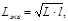
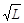
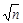

ГОСУДАРСТВЕННЫЙ
КОМИТЕТ СОВЕТА МИНИСТРОВ СССР
ПО ДЕЛАМ СТРОИТЕЛЬСТВА
СТРОИТЕЛЬНЫЕ НОРМЫ И ПРАВИЛА
СНиП III-44-77
Правила производства и приемки работ
часть III
Тоннели железнодорожные, автодорожные и гидротехнические. Метрополитены
глава 44
Утверждены
постановлением Государственного
комитета Совета Министров СССР
по делам строительства
от 5 июля 1977 г. № 91
Москва стройиздат 1977
Глава СНиП III-44-77 «Тоннели железнодорожные, автодорожные и гидротехнические. Метрополитены» разработана Всесоюзным научно-исследовательским институтом транспортного строительства с участием Метрогипротранса, Оргтрансстроя, Геодезическо-маркшейдерского управления Главтоннельметростроя Минтрансстроя, Гидропроекта им. Жука и Оргэнергостроя Минэнерго СССР.
С введением в действие главы СНиП III-44-77 утрачивают силу главы СНиП: III-Б.8-68 «Тоннели железнодорожные, автодорожные и гидротехнические. Правила организации строительства, производства и приемки работ» и III-Д.3-68 «Метрополитены. Правила организации строительства, производства и приемки работ».
Редакторы - инж. В. И. Серегина (Госстрой СССР), кандидаты техн. наук: В. В. Якобс (ЦНИИС), И. Л. Воллер (Оргэнергострой), инженеры: Е. А. Василенко (Метрогипротранс), В. Г. Лебедев (Гидропроект), Д. Л. Штерн (Оргтрансстрой), Д. Г. Кислицын (Главтоннельметрострой).
|
Государственный комитет Совета Министров СССР по делам строительства (Госстрой СССР) |
Строительные нормы и правила |
СНиП III-44-77 |
|
Тоннели железнодорожные, автодорожные и гидротехнические. Метрополитены |
Взамен СНиП |
1.1. Правила настоящей главы должны соблюдаться при производстве и приемке работ по строительству железнодорожных, автодорожных, гидротехнических тоннелей и метрополитенов.
Правила распространяются на работы по проходке тоннелей и стволов, возведению обделок, а также на специфические работы по монтажу технологического оборудования, устройству пути и контактного рельса.
Производство работ по реконструкции указанных тоннелей должно осуществляться по специальным указаниям проекта организации строительства и проекта производства работ.
1.2. Строительство тоннелей и метрополитенов, в особо сложных климатических и инженерно-геологических условиях, в районах распространения вечномерзлых грунтов, в сейсмических, лавиноопасных и труднодоступных районах должно производиться по специальным требованиям, предусмотренным проектом сооружения.
1.3. При строительстве тоннелей, осуществляемом Минэнерго СССР, должны также соблюдаться правила и нормы безопасного ведения работ, утвержденные Госгортехнадзором СССР, а при строительстве тоннелей и метрополитенов, осуществляемом Минтрансстроем, - правила безопасного ведения работ, утвержденные Минтрансстроем.
|
Внесены Минтрансстроем |
Утверждены постановлением Государственного комитета Совета Министров СССР по делам строительства от 5 июля 1977 г. №91 |
Срок введения в действие 1 июля 1978 г. |
1.4. В состав проекта организации строительства тоннелей кроме данных, указанных в Инструкции по разработке проектов организации строительства и проектов производства работ для строительства линейных объектов транспорта и связи и для подземных горных выработок при строительстве шахт и карьеров включаются также:
расположение на общей схеме линий и сооружений метрополитена с ситуационным планом местности участков подземных и открытых работ, строительных площадок и мест отвалов грунта;
расстановка применяемых механизмов по участкам, сроки эксплуатации и режим их работы для каждого вида специальных способов работ (стабилизация и искусственное закрепление грунтов, понижение уровня грунтовых вод, проходка под сжатым воздухом, способом «стена в грунте» и др.), объемы выполнения этих работ и увязке с графиком производства тоннельных работ;
согласованные с эксплуатирующими организациями проектные решения инженерных мероприятий по обеспечению сохранности наземных и подземных зданий и сооружений, пересечению автомобильных и железных дорог;
схема расстановки механизмов, применяемых для обслуживающих процессов и создания необходимого температурно-влажностного режима в законченных строительством отдельных сооружениях на период монтажа оборудования в них и до сдачи в эксплуатацию, графики работы механизмов по участкам с указанием сроков эксплуатации их и режимов работы, а также ведомость подсчета объемов работ по участкам;
пояснительная записка с обоснованием принятых способов и скоростей проходки подземных выработок, применения специальных способов работ, а также перечень сооружений, которые по условиям монтажа постоянного технологического оборудования требуют создания необходимого температурно-влажностного режима, с указанием основных параметров этого режима.
При присоединении вновь строящихся линий метрополитена к действующим в проекте организации строительства должны быть предусмотрены порядок и способы производства соответствующих работ, согласованные с эксплуатирующей организацией.
1.5. Для вновь начинаемого строительства метрополитена в городах при создании производственной базы, по изготовлению нестандартизированного оборудования и специального оборудования для производства тоннельных работ, по ремонту горнопроходческого оборудования и транспортных средств, производству железобетонных элементов обделки, товарного бетона, раствора, гидроизоляционных материалов, по комплектации оборудования постоянных устройств метрополитена, а также при создании складских помещений - должна быть уточнена возможность максимального использования имеющихся в районе строительства предприятий стройиндустрии.
1.6. При сооружении железнодорожных, автодорожных и гидротехнических тоннелей бетонорастворные узлы, опалубочные, арматурные мастерские и другие объекты производственной базы создаются, как правило, на строительной площадке. Необходимость организации указанных объектов на строительной площадке метрополитенов должна обосновываться в проекте организации строительства.
1.7. Временные сооружения на строительных площадках должны располагаться с учетом максимально возможного сохранения действующих строений, зеленых насаждений, обеспечения нормальных условий производства строительных работ и жизни населения в районах, прилегающих к строительным площадкам, сохранения работы городского хозяйства, соблюдения противопожарных и санитарных требований.
1.8. Обеспечение сжатым воздухом подземных участков работ должно осуществляться от стационарных компрессорных станций, а участков открытых работ - от передвижных компрессорных установок. Производительность, число и размещение компрессорных станций устанавливаются проектом организации строительства.
1.9. Электроснабжение строительства должно осуществляться от подстанций районной энергосистемы по самостоятельным воздушным или кабельным линиям с напряжением 6 - 10 кВ. Допускается электроснабжение шахтных площадок от городской сети с напряжением 6 - 10 кВ (если энергия в сеть подастся от двух независимых источников) или от передвижных энергоустановок.
Электроснабжение должно обеспечивать питание электроэнергией от двух независимых источников тока следующих групп электроприемников: шахтного подъема, вентиляторов главного проветривания, водоотлива, компрессорной станции низкого давления (кессонной), водопонижающих установок и освещения подземных выработок. Подключение этих электроприемников должно быть равномерно распределено по секциям распределительного щита, подключенным к независимым источникам питания.
1.10. Подземные выработки во время строительства тоннелей должны обеспечиваться телефонной связью и средствами оповещения.
1.11. Сооружение тоннелей должно осуществляться по циклограммам, обеспечивающим заданную скорость проходки из условий выполнения цикла горно-проходческих работ за время, кратное принятой на строительстве сменности.
1.12. В процессе проходки тоннелей надлежит вести систематическое визуальное наблюдение за соответствием фактических геологических и гидрогеологических условий, характеризующих устойчивость забоя, проектным данным в части изменения мощности и характера напластований грунтов, их крепости по буримости, трещиноватости, видов грунтов и притока грунтовых вод в забой.
Результаты наблюдений следует заносить в журнал производства горных работ по форме, приведенной в прил. 9. Об отклонениях фактических геологических и гидрогеологических данных от проектных ставится в известность заказчик.
2.1. Геодезическая разбивочная основа должна создаваться на поверхности вдоль трассы строящегося тоннеля в составе и объеме, указанных в пп. 2.2 - 2.8 настоящей главы. При этом выносятся и закрепляются на местности основные оси стволов, порталов, штолен и наземных сооружений.
В процессе производства геодезическо-маркшейдерских разбивочных работ по выносу проекта тоннеля в натуру должны производиться ориентирование подземных выработок и передача в них с поверхности координат и отметок от геодезической разбивочной основы, а также должна создаваться подземная маркшейдерская основа согласно требованиям пп. 2.11 - 2.15 настоящей главы.
2.2. Тоннельная триангуляция, выполненная в составе геодезической разбивочной основы, должна отвечать требованиям, установленным в табл. 1.
Таблица 1
|
Разряд триангуляции |
Длина сторон триангуляции, км |
Средняя квадратическая погрешность измеренного угла, подсчитанная по невязкам в треугольниках |
Допустимая невязка треугольника |
Относительная погрешность измерения длины базиса |
Средняя относительная погрешность выходной стороны |
Допустимое увеличение базисной сети ромбического вида |
Относительная погрешность определения длины наиболее слабой стороны сети |
Средняя погрешность измерения дирекционного угла более слабой стороны сети |
|
|
Более 8 |
I - Т |
4 - 10 |
± 0,7" |
± 3" |
1:800000 |
1:400000 |
2,5 |
1:200000 |
± 1.5" |
|
От 5 до 8 |
II - т |
2 - 7 |
± 1" |
± 4" |
1:500000 |
1:300000 |
2,5 |
1:150000 |
± 2" |
|
От 2 до 5 |
III-т |
1,5 - 5 |
± 1.5" |
± 6" |
1:400000 |
1:200000 |
3 |
1:120000 |
± 3" |
|
От 1 до 2 |
IV-т |
1 -3 |
± 2" |
± 8" |
1:300000 |
1:150000 |
3 |
1:70000 |
± 4" |
|
Примечание.
В таблице длина L учитывает случай сооружения тоннеля из двух крайних
его точек. При наличии промежуточных стволов или штолен необходимо определять
величину Lэкв по формуле:  |
|||||||||
При строительстве комплекса из двух и более тоннелей разряд тоннельной триангуляции следует определять, исходя из длины наибольшего по протяженности тоннеля.
Все угловые и линейные измерения при построении тоннельной триангуляции должны выполняться дважды с интервалом во времени не менее месяца.
Пункты тоннельной триангуляции следует располагать не реже, чем через 3 км вдоль трассы тоннеля и не далее 2 км от нее.
2.3. В случаях когда вместо тоннельной триангуляции в составе геодезической разбивочной основы прокладывается тоннельная полигонометрия, ее точность должна соответствовать требованиям, установленным в табл. 2.
Таблица 2
|
Разряд тоннельной полигонометрии |
Длина стороны, км |
Средняя квадратическая погрешность измеренного угла поворота |
Средняя относительная погрешность измерения стороны |
Допустимые относительные погрешности хода |
|||||
|
по оценке на станции |
оценка, по многократным измерениям и невязкам фигур |
для криволинейного тоннеля |
для прямолинейного тоннеля |
для криволинейного тоннеля |
для прямолинейного тоннеля |
||||
|
по поперечному сдвигу |
по продольному сдвигу |
||||||||
|
Более 8 |
I - Т |
3-10 |
+0,4" |
+0,7" |
1:300000 |
1:150000 |
1:200000 |
1:200000 |
1:100000 |
|
От 5 до 8 |
II - т |
2-7 |
±0,7" |
-1" |
1:200000 |
1:100000 |
1:150000 |
1:150000 |
1:70000 |
|
От 2 до 5 |
III-т |
1,5-5 |
+1" |
+1,5" |
1:150000 |
1:70000 |
1:120000 |
1:120000 |
1:60000 |
|
От 1 до 2 |
IV-т |
1-3 |
±1,5" |
±2" |
1:100000 |
1:50000 |
1:70000 |
1:70000 |
1:40000 |
2.4. На поверхности вдоль трассы тоннеля в составе геодезической разбивочной основы должна прокладываться основная полигонометрия в виде системы замкнутых полигонов или одиночных ходов, расположенных между пунктами тоннельной триангуляции и тоннельной полигонометрии.
Основную полигонометрию допускается использовать в качестве самостоятельной геодезической разбивочной основы для строительства тоннелей, длина которых не превышает 1 км.
Основная полигонометрия должна удовлетворять следующим требованиям:
длины сторон следует принимать от 100 до 300 м;
относительная невязка в периметре хода не должна превышать: 1:35000 - для тоннелей длиной более 0,5 км и 1:20000 - для тоннелей длиной менее 0,5 км;
величина средней квадратической погрешности измеренного угла не должна превышать ±3";
при измерении линий коэффициент случайного влияния m не должен превышать 0,0003, а коэффициент систематического влияния l - 0,00001.
Измерения углов и линий следует проводить дважды с интервалом по времени не менее суток.
2.5. Вместо основной полигонометрии на открытой пересеченной местности надлежит строить аналитические сети в виде цепей или сетей треугольников, опирающихся на пункты тоннельной триангуляции. Допускается также вставка одиночных пунктов аналитической сети для передачи координат через порталы, стволы, боковые штольни.
Длины сторон аналитической сети должны приниматься от 300 до 600 м, величины угловых невязок в треугольниках не должны быть более ±10".
2.6. Систему реперов, входящих в состав геодезической разбивочной основы, следует создавать путем нивелирования I и II классов; при этом расстояние между реперами, отметки которых определены нивелированием II класса, должно быть не более 2 км.
Последующее сгущение системы реперов следует осуществлять путем нивелирования III и IV классов, опирающегося на реперы высших классов, из расчета обеспечения каждого ствола, портала или штольни - не менее чем тремя реперами.
В ходах III класса предельные невязки не должны быть более ± 10
мм × 
В ходах IV класса, насчитывающих свыше 16 станций на 1
км хода, допускается невязка в ± 5 мм × 
2.7. Для обеспечения исходными данными ориентирования подземных выработок, а также для производства разбивочных работ на строительных площадках на поверхности в составе геодезической разбивочной основы прокладывается подходная полигонометрия в виде системы ходов или замкнутых полигонов со сторонами длиной от 30 до 70 м и общей длиной не более 300 м. Подходная полигонометрия должна опираться на пункты и стороны основной или тоннельной полигонометрии.
При измерении углов подходной полигонометрии расхождение их значений, полученных из разных приемов, допускается не более ±15". Относительная погрешность при измерении длин сторон подходной полигонометрии, полученная по результатам двойных измерений, не должна превышать 1:20000, а по абсолютной величине должна быть не более ±3 мм.
2.8. Знаки геодезической разбивочной основы должны закладываться с учетом обеспечения их сохранности, прямой видимости на ближайшие стволы, порталы, штольни, а также возможности осуществления удобных и надежных примыканий полигонометрических ходов.
2.9. Заказчик обязан создать геодезическую разбивочную основу для строительства тоннелей и метрополитенов и не менее чем за 10 дней до начала строительно-монтажных работ передать подрядчику следующую техническую документацию на нее и на закрепленные на площадке строительства пункты и знаки этой основы:
каталоги координат и отметок на все знаки и реперы и основные точки выхода сооружения на поверхность (порталов, стволов, штолен), а также длин и дирекционных углов сторон наземной геодезической разбивочной основы;
схему расположения пунктов этой основы, их привязки (кроки) к местным предметам, а в необходимых случаях - адреса и описания расположения этих пунктов;
технический отчет о проведенных геодезических работах по созданию наземной геодезической разбивочной основы с указанием сроков и последовательности их выполнения, примененной методики и использованных инструментов с оценкой достигнутой точности.
2.10. Ориентирование подземных выработок и передачу дирекционного угла и координат с пунктов геодезической разбивочной основы на знаки подземной маркшейдерской основы следует производить следующими способами:
а) способом гироскопического ориентирования;
б) через одну вертикальную шахту по отвесам;
в) через порталы, горизонтальные и наклонные выработки путем непосредственной передачи дирекционного угла;
г) через две вертикальные шахты или скважины по отвесам.
В зависимости от местных условий может применяться сочетание этих способов ориентирования.
Ориентирование, указанное в подпунктах «б», «в» настоящего пункта, производится не менее трех раз: первый - когда забой находится от ствола (портала) на расстоянии 50 - 60 м; второй - когда проходка по основной трассе достигнет 100 - 150 м; третий - когда длина проходки по трассе глухим забоем достигнет 500 м.
Гироскопическое ориентирование следует повторять не реже, чем через каждые 300 м проходки.
Величина расхождений в значениях дирекционного угла, полученных при ориентированиях, должна быть не более 20".
Отметки следует передавать не менее трех раз с разных исходных реперов на поверхности. Разница в отметках подземного репера, полученных по разным передачам, должна быть не более 7 мм.
2.11. Подземная маркшейдерская основа должна создаваться в виде подземной полигонометрии следующих видов:
рабочей полигонометрии со сторонами длиной от 20 до 60 м;
основной полигонометрии со сторонами длиной от 40 до 120 м.
Схема построения как рабочей, так и основной подземной полигонометрии преимущественно должна представлять собой цепочку вытянутых треугольников, в которых измеряются все углы и все стороны; при этом каждая вторая точка рабочей полигонометрии включается в ход основной полигонометрии.
Знаки рабочей полигонометрии следует закладывать по двум сторонам тоннелей; при этом знаки основной полигонометрии на криволинейных участках следует располагать по наружной стороне кривой.
В тоннелях метрополитенов знаки основной полигонометрии на прямолинейных участках надлежит располагать со стороны, противоположной контактному рельсу.
В тоннелях, имеющих круговые или овальные внутренние очертания, где предусмотрена укладка постоянного железнодорожного пути, знаки подземной полигонометрии следует закладывать на уровне головки рельсов. В аналогичных тоннелях с прямоугольным внутренним очертанием - на уровне верха путевого бетона или верха балластной призмы.
Знаки и точки подземной полигонометрии одновременно должны служить и реперами сети подземного никелирования.
2.12. Абсолютные величины погрешностей в измеренных длинах сторон подземной полигонометрии по разностям двойных измерений не должны превышать:
2 мм - для линий до 25 м;
3 мм - для линий от 25 до 50 м;
4 мм - для линий от 50 до 80 м.
В линиях, длина которых превышает 80 м, относительная разность между значениями измерений в прямом и обратном направлениях не должна быть больше 1:20000.
2.13. Углы подземных полигонометрических ходов следует измерять оптическими теодолитами, при этом для рабочей полигонометрии делают 2 - 3 круговых приема, а для основной - 4 - 6 приемов. Колебания направлений, приведенных к нулю на одной станции из разных приемов, не должны превышать 15" для рабочей полигонометрии и 10" - для основной. Угловые невязки в треугольниках основной полигонометрии не должны превышать 8", а в треугольниках рабочей полигонометрии - 12".
Угловые измерения следует периодически повторять для выявления и устранения влияния возможных деформаций знаков основной подземной полигонометрии. Окончательные наблюдения и увязку подземной полигонометрии производят после сбоек выработок.
2.14. Отметки знаков подземной полигонометрии следует определять способом геометрического нивелирования. Допустимые невязки в нивелирных полигонах вычисляются по формуле
fh доп = ± 2 мм ,
где п - число станций в полигоне.
Нивелирование следует повторять не менее трех раз за весь период строительства. Окончательная нивелировка и увязка отметок знаков основной подземной полигонометрии производится после сбоек встречных выработок.
2.15. Знаки и точки подземной маркшейдерской основы в зависимости от характера подземной выработки и типа тоннельной обделки следует закреплять:
металлическими стержнями со сферической головкой, в которой высверлено и зачеканено медью, бронзой или латунью отверстие диаметром в 2 - 3 мм, при этом стержни закладываются в бетонный монолит в лотковой части сооружения или привариваются к обнаженной арматуре тоннельной обделки и обмазываются цементно-песчаным раствором;
в виде точек, высверленных на площадке, запиленных на ребре жесткости или борте чугунного тюбинга тоннельной обделки. Точки при этом зачеканиваются вышеуказанным способом.
Закреплять знаки в бетонном монолите лотковой части тоннеля, где будет уложен постоянный рельсовый путь, следует за пределами концов шпал железнодорожного пути.
2.16. Разбивочные работы в процессе строительства (проходки, возведения обделок, устройства пути и др.) должны выполняться с точностью, обеспечивающей вынос в натуру от знаков геодезической разбивочной основы и подземной маркшейдерской основы осей и отметок, определяющих положение сооружения и отдельных его частей и конструктивных элементов в плане и по высоте с соблюдением установленных настоящей главой допусков и установленных, соответствующими ГОСТами и нормами проектирования (СНиП) габаритов.
2.17. До производства геодезическо-маркшейдерских разбивочных работ должны быть подготовлены геодезические разбивочные данные. Проект (чертежи, схема, таблицы и др.), используемый для подготовки разбивочных данных, должен быть оформлен в соответствии с установленным порядком выдачи документации к производству работ.
Все разбивки надлежит выполнять не менее двух раз, преимущественно различными способами.
2.18. В процессе строительства тоннелей следует производить ежемесячные контрольные измерения объемов основных горнопроходческих работ (длины проходки горных выработок, м, собранных колец тоннельной обделки, расчеканки швов и др.).
2.19. В процессе строительства подземных сооружений должны осуществляться наблюдения за деформациями земной поверхности и наблюдения за перемещениями, сдвигами и кренами:
существующих наземных сооружений и объектов, расположенных в зоне возможных деформаций поверхности;
строящихся подземных и наземных объектов и сооружений;
существующих эксплуатируемых подземных сооружений, расположенных в зоне подземного строительства (по согласованию с эксплуатирующей организацией).
2.20. Все построенные (в том числе и ликвидированные) подземные сооружения или выработки должны быть показаны в исполнительных чертежах.
Исходным материалом для составления этих исполнительных графических документов являются рабочие чертежи, данные исполнительных съемок и контрольных геодезическо-маркшейдерских измерений, которые производятся и систематизируются в течение всего периода строительства.
2.21. Исполнительные чертежи должны содержать следующие данные о построенных объектах:
а) характеристику (в координатах и абсолютных отметках) фактического пространственного расположения построенных сооружений и их взаимную связь;
б) фактические геометрические размеры сооружений, их основных элементов и отклонения этих размеров от проектных;
в) графическую характеристику материалов, из которых выполнена обделка сооружений, и фактическую геологическую структуру грунтов, согласно требованиям п. 1.12 настоящей главы;
г) исполнительную схему основной подземной полигонометрии и ее примыканий к пунктам наземной геодезической разбивочной основы в районе порталов, постоянных стволов, а также каталоги координат, дирекционных углов и отметок основной подземной полигонометрии.
Графическая информация о построенных объектах, перечисленная в подпунктах «а», «б», наносится на исполнительные планы, профили, продольные разрезы, поперечные сечения и виды, а также группируется в сводные таблицы и каталоги фактических размеров и отметок.
Исполнительные чертежи должны быть выполнены с учетом длительного хранения и пользования ими.
3.1. Требования настоящего раздела должны соблюдаться при сооружении стволов тоннелей глубиной до 50 м.
Сооружение стволов глубиной более 50 м должно осуществляться согласно правилам производства и приемки работ, установленным главой СНиП по подземным горным выработкам.
3.2. Сооружение стволов следует производить следующими основными способами: обычным способом с последовательным возведением крепи в призабойной части выработки и способом опускной крепи с наращиванием обделки сверху.
В зависимости от инженерно-геологических условий и глубины ствола обычный способ может применяться в сочетании со способом опускной крепи при проходке отдельных участков ствола.
3.3. Обычный способ следует применять при сооружении стволов в устойчивых грунтах (т.е. допускающих обнажение грунта без постановки крепи вслед за выемкой): глинистых, гравийно-галечниковых, щебенистых и песчаных, расположенных выше уровня капиллярного поднятия воды, а также в устойчивых скальных грунтах с коэффициентом крепости, по шкале проф М. М. Протодъяконова (именуемого в дальнейшем коэффициент крепости), от 1,5 и выше при ожидаемом притоке воды в забое до 50 м3/ч.
3.4. Способ опускной крепи следует применять при сооружении стволов в неустойчивых (т.е. не допускающих обнажений кровли и боков выработки без постановки крепи) водонасыщенных песчаных, супесчаных, суглинистых, лессовых, слабых глинистых, плывунных и других аналогичных грунтах без крупных включений.
3.5. Применение опускной крепи допускается только при наличии водоупора под водоносным грунтом и при отсутствии постоянных зданий и сооружений в зоне возможных деформаций грунтов.
3.6. В водонасыщенных неустойчивых грунтах, указанных в п. 3.4, а также в скальных грунтах при ожидаемом притоке воды в забое более 50 м3/ч проходку стволов следует осуществлять, применяя специальные способы: искусственного замораживания, химического закрепления и тампонажа грунтов (цементация, битумизация, глинизация), водопонижения и погружения крепи в тиксотропной рубашке.
Выбор специального способа проходки стволов следует осуществлять на основании сопоставления технико-экономических показателей, с учетом данных табл. 3.
Таблица 3
|
Наименование специального способа |
Область применения |
|
|
1 |
Искусственное замораживание грунтов |
В неустойчивых водонасыщенных нескальных грунтах. В скальных водоносных грунтах при ожидаемом притоке поды более 50 м3/ч |
|
2 |
Искусственное понижение уровня грунтовых вод (скважинным способом с применением глубинных насосов) |
В неустойчивых водонасыщенных грунтах с коэффициентом фильтрации не менее 0,5 м/сут в целях осушения выработки. В устойчивых скальных водоносных трещиноватых грунтах при гидростатическом напоре более 2 ати в целях снижения напора и уменьшения притока воды в выработку |
|
3 |
Тампонаж грунта (цементация, битумизация, глинизация) |
В скальных трещиноватых грунтах при наличии открытых трещин и при коэффициенте фильтрации не менее 0,01 м/сут, а также в гравийно-галечниковых и песчаных грунтах при коэффициенте фильтрации не менее 20 м/сут |
|
4 |
Погружение крепи в тиксотропной рубашке |
В неустойчивых водонасыщенных нескальных грунтах без крутых включений при ожидаемом притоке воды в забой более 50 м3/ч и при неэффективности других способов: закрепления грунтов, водопонижения или замораживания |
|
5 |
Химическое закрепление грунтов (силикатизация и смолизация) |
В песчаных водонасыщенных грунтах, имеющих коэффициент фильтрации от 2 до 50 м/сут и в просадочных - от 0,2 до 2 м/сут |
3.7. Производство работ при сооружении стволов способом опускной крепи или специальными способами следует осуществлять согласно правилам производства и приемки работ, установленными настоящей главой, а также главой III части СНиП по основаниям и фундаментам.
3.8. До начала сооружения ствола в зависимости от принятого способа проходки надлежит производить следующие работы: устройство воротника, сооружение участка ствола для монтажа проходческого оборудования (подвесного полка, устройств для монтажа обделки и погрузки грунта) и монтаж этого оборудования, монтаж опускной крепи.
Сооружение воротника и верхнего участка ствола надлежит осуществлять в открытом котловане. Котлован следует разрабатывать с помощью грейфера и пневматических инструментов. Возведение сборной или монолитной железобетонной обделки на всю высоту воротника следует производить с использованием подвижного кранового оборудования.
Надшахтный копер при сборной обделке стволов следует сооружать из тюбинговых колец. При монолитной обделке допускается сооружать копер из металлического проката с обшивкой.
3.9. При проходке стволов обычным способом следует использовать надшахтный комплекс оборудования (подъемную машину, бункерную эстакаду и др.), предназначенный для проходки тоннелей.
3.10. Грунты в забое ствола следует разрабатывать пневматическим инструментом (пневмолопатами или отбойными молотками) при коэффициенте крепости грунтов до 1,5, а грунты с коэффициентом крепости свыше 1,5 - буровзрывным способом. Уборку грунта следует производить грейферными погрузчиками.
3.11. Глубина заходки при сборной обделке стволов не должна превышать ширины кольца обделки более чем на 10 - 15 см.
3.12. Временную крепь при проходке стволов с монолитной обделкой следует выполнять: в неустойчивых нескальных грунтах из металлических колец, устанавливаемых на расстоянии не более 1 м друг от друга с затяжкой боковой поверхности досками; в скальных выветрелых грунтах - анкерной в сочетании с металлической сеткой, а в слабовыветрелых скальных грунтах - анкерной или набрызг-бетонной.
3.13. Все элементы деревянной временной крепи ствола должны удаляться по мере возведения обделки.
Случаи оставления деревянной крепи за обделкой должны обосновываться проектом производства работ.
3.14. При производстве буровзрывных работ и возведении обделок стволов кроме правил настоящей главы следует также соблюдать правила, установленные главой СНиП по подземным горным выработкам.
3.15. При сооружении стволов с монолитной бетонной обделкой, при отсутствии наземных зданий и сооружений в зоне возможных деформаций грунтов проходка может производиться участками расчетной длины, закрепляемыми временной крепью.
Длина участков устанавливается проектом производства работ с учетом геологических условий и способа проходки.
3.16. Производство работ по искусственному понижению уровня грунтовых вод, замораживанию и тампонажу грунтов должно осуществляться по совмещенному графику производства всех работ по проходке ствола.
3.17. Выключение системы замораживания следует производить после проходки и возведения обделки на участке замороженного грунта, а выключение системы водопонижения - после устройства гидроизоляции на участке водопонижения.
3.18. Откачка воды из водопонизительных скважин должна производиться непрерывно. Перерывы в работах по сооружению ствола, связанные с действием водопонизительных установок, не допускаются.
3.19. При сооружении стволов с опускной крепью (без тиксотропной рубашки) и обычным способом в водоносных грунтах водоотлив следует производить из опережающего забоя (зумпфа).
3.20. Проверка положения опускной крепи в плане и по высоте должна производиться после каждой посадки крепи, но не реже чем через каждый метр по мере ее опускания.
3.21. После пересечения неустойчивых грунтов нож опускной крепи должен быть погружен в водоупор по всему периметру на глубину не менее 1 м.
3.22. По окончании проходки участка ствола с опускной крепью надлежит проверить наличие пустот на границе контакта водонасыщенных грунтов с нижележащими устойчивыми грунтами.
При обнаружении пустот они должны быть заполнены путем нагнетания цементно-песчаного раствора. В водоносных песках (плывунах) нагнетание раствора за обделку не производится.
При последующей проходке ствола на участках нижележащих устойчивых грунтов после монтажа первых пяти колец следует производить тампонаж цементно-песчаного раствора за каждое кольцо, а разработку забоя вести на глубину, достаточную для установки не более одного тюбинга. Порядок нагнетания за обделку ниже этой зоны устанавливается проектом производства работ.
3.23. Тампонаж закрепного пространства, заполненного тиксотропным раствором, может осуществляться путем замены глинистого раствора цементно-песчаным или путем оставления глинистого раствора за крепью с целью гидроизоляции обделки, что устанавливается проектом.
3.24. Монтаж сборной обделки должен производиться с использованием уплотняющих материалов и последующим нагнетанием цементно-песчаного раствора за обделку.
Наращивание колец обделки при проходке ствола способом опускной крепи в тиксотропной рубашке следует производить выше уровня глинистого раствора.
3.25. Нагнетание раствора за обделку стволов, сооружаемых в искусственно замороженных грунтах, следует производить согласно требованиям п. 5.32 настоящей главы.
3.26. Чеканка швов должна выполняться при обычном способе сооружения ствола вслед за сборкой колец обделки, а при способе опускной крепи - после окончания проходки ствола.
3.27. Армирование ствола (установка расстрелов, направляющих для клетьевого подъема, трубопроводов, кабелей, лестниц и др.) следует производить в процессе проходки ствола.
На участке проходки с опускной крепью армирование ствола, а также монтаж надшахтного тюбингового копра надлежит выполнять только после окончания проходки участка ствола, сооружаемого способом опускной крепи.
3.28. Для проветривания забоя ствола, сооружаемого обычным способом, должны использоваться вентиляционные трубопроводы, устанавливаемые при армировании ствола.
3.29. Стволы, не предназначенные для использования при строительстве тоннелей, могут сооружаться после проходки тоннелей. При этом допускается производить спуск грунта и воды из забоя ствола в подземные выработки через предварительно пробуренные скважины или фурнели.
4.1. Сооружение железнодорожных, автодорожных и гидротехнических тоннелей в зависимости от их длины, сроков строительства, инженерно-геологических условий и рельефа местности следует производить с одного или двух портальных, а также из промежуточных забоев.
Общее число забоев, а также типы и расположение подходных выработок для вскрытия промежуточных забоев должны устанавливаться проектом.
4.2. Проходку тоннелей в зависимости от размеров и формы поперечного сечения, а также инженерно-геологических условий надлежит выполнять способами: сплошного забоя, уступным и щитовым. Проходка способами опертого свода, опорного ядра и раскрытия на полный профиль по частям допускается при сооружении коротких тоннелей (длиной до 300 м) или ограниченных участков тоннелей.
Способы проходки тоннелей и средства механизации определяются проектом на основе результатов технико-экономического сравнения вариантов.
Порядок разработки тоннельного забоя должен устанавливаться проектом производства работ.
4.3. До начала основных работ по сооружению тоннелей протяженностью более 300 м, а также при невозможности бурения разведочных скважин следует производить проходку передовой штольни в пределах поперечного сечения тоннеля на всю длину тоннеля для обеспечения: осушения выработки и отвода самотеком грунтовых вод при проходке; улучшения вентиляции выработок; организации транспортной связи между портальными площадками; проведения дополнительной инженерно-геологической разведки.
4.4. Способ сплошного забоя следует применять для проходки тоннелей высотой до 10 м с монолитной обделкой в скальных грунтах с коэффициентом крепости не менее 4; при этом временное крепление выработки при проходке в скальных монолитных (невыветрелых) грунтах с коэффициентом крепости от 12 и выше не производится, а при проходке в скальных трещиноватых (выветрелых и сильновыветрелых) грунтах применение временной крепи обязательно.
4.5. Уступный способ следует применять для проходки тоннелей высотой более 10 м, сооружаемых в скальных грунтах с коэффициентом крепости не менее 4 и для проходки тоннелей высотой менее 10 м в скальных грунтах с коэффициентом крепости от 2 до 4. Проходку тоннелей следует осуществлять преимущественно с нижним уступом.
4.6. Разработка верхней части сечения тоннеля при уступном способе должна производиться способом сплошного забоя в соответствии с п. 4.4 настоящей главы.
4.7. Разработка нижней части сечения тоннеля (нижнего уступа) при уступном способе должна производиться согласно требованиям пп. 4.12, 4.13 и 4.14 настоящей главы.
Нижняя часть сечения тоннеля при высоте ее более 10 м должна разрабатываться методом ступенчатого забоя или по ярусам, высота которых в скальных грунтах с коэффициентом крепости от 12 и выше не должна превышать 10 м, а в скальных грунтах с коэффициентом крепости от 4 до 12 - 5м.
В тоннелях, сооружаемых в скальных невыветрелых грунтах с коэффициентом крепости от 12 и выше, разработку нижнего уступа допускается производить без оставления боковых штросс, при этом должна быть обеспечена устойчивость забетонированной части тоннеля и при необходимости защита грунта от возможного выветривания.
4.8. Щитовой способ следует применять для проходки тоннелей в неустойчивых нескальных грунтах, а также в скальных выветрелых и сильновыветрелых грунтах с коэффициентом крепости до 4, проявляющих горное давление.
4.9. Способ опертого свода допускается применять при сооружении тоннелей или их участков длиной до 300 м в нескальных грунтах типа твердых глин и суглинков, сцементированных крупнообломочных, отвердевших лессов и других грунтах, а также в скальных грунтах с коэффициентом крепости от 1 до 4, способных воспринять давление от пят свода обделки с учетом всех нагрузок, действующих на свод.
Способ опертого свода следует применять также при неоднородном сложении грунтов по сечению тоннеля, когда ниже пят свода расположены необводненные прочные грунты с коэффициентом крепости от 1 и выше, а в сводовой части - менее прочные грунты.
4.10. При сооружении тоннелей в необводненных грунтах способ опертого свода должен применяться преимущественно по одноштольневой схеме.
Тоннели в водоносных грунтах следует сооружать по двухштольневой схеме.
Нижняя и верхняя штольни должны соединяться между собой грунтоспусками (фурнелями), а также наклонными сбойками (бремсбергами).
Расстояние между грунтоспусками и наклонными сбойками устанавливается проектом в зависимости от принятых погрузочных и транспортных средств и не должно превышать 12 м между грунтоспусками и 30 м между наклонными сбойками.
4.11. При проходке тоннелей способом опертого свода раскрытие калотт надлежит вести отдельными участками (кольцами), длина которых устанавливается в зависимости от инженерно-геологических условий и не должна превышать 6,5 м.
Раскрытие калотты по длине тоннеля следует производить с интервалами в 1 - 3 кольца в зависимости от инженерно-геологических условий.
В кольцах, смежных с забетонированным сводом, раскрытие калотты допускается при достижении бетоном 60% проектной прочности.
4.12. При проходке тоннелей способом опертого свода среднюю штроссу следует разрабатывать после достижения бетоном свода проектной прочности для обделок, воспринимающих полную расчетную нагрузку и 75% проектной прочности для обделок тоннелей, сооружаемых в скальных грунтах с коэффициентом крепости от 4 и выше.
При разработке средней штроссы следует оставлять у пят свода бермы. Ширина берм устанавливается проектом в зависимости от давления на грунт под пятами свода.
4.13. Разработку боковых штросс при проходке тоннелей способом опертого свода следует производить в шахматном порядке или одновременно с обеих сторон тоннеля, при этом вертикальные рабочие швы колец свода и участков стен не должны совпадать. Порядок разработки боковых штросс и длина участков разработки устанавливаются проектом производства работ в зависимости от устойчивости грунтов.
При разработке боковых штросс в неустойчивых нескальных, а также в трещиноватых скальных грунтах с коэффициентом крепости от 4 и ниже поверхности выработки должны быть закреплены временной крепью.
4.14. При разработке грунта для устройства обратного свода должны приниматься необходимые меры к обеспечению устойчивости стен тоннеля (постановка распорок, ограничение протяженности участков разработки и др.).
4.15. Способ опорного ядра следует применять при сооружении тоннелей или их участков длиной до 300 м в неводоносных грунтах: глинах, суглинках, супесях, лессовых, песчаных, моренных, крупнообломочных и др., не способных воспринимать давление от свода обделки.
4.16. При сооружении тоннелей сечением более 40 м2 способом опорного ядра допускается предварительная проходка по оси тоннеля нижней транспортной штольни.
4.17. Боковые штольни для возведения стен при проходке тоннеля способом опорного ядра следует разрабатывать на всю длину сооружаемого участка тоннеля.
При возведении стен несколькими ярусами проходка очередного верхнего яруса допускается только после окончания бетонирования нижележащей стены и достижения бетоном 25% проектной прочности. После бетонирования стен пазухи между стеной и крепью нижней штольни должны быть заполнены грунтом с уплотнением.
4.18. Длина разрабатываемого кольца калотты при проходке тоннеля способом опорного ядра не должна превышать 4 м. Раскрытие калотты должно осуществляться с интервалами по длине тоннеля не менее чем в 2 кольца, а в неустойчивых грунтах - не менее чем в 3 кольца.
4.19. Способ раскрытия на полный профиль по частям с креплением прогонами и торцевыми фермами следует применять при сооружении первых колец сборной обделки камер для монтажа щита или тюбингоукладчика, предназначенных для дальнейшего сооружения тоннеля, а также при сооружении других камер и участков тоннелей небольшой протяженности, сооружаемых в неводоносных глинах, суглинках и супесях и др. при наличии бокового давления, когда нельзя применить способ опертого свода. Разработка грунта должна осуществляться участками на длину не более длины кольца обделки.
4.20. Наклонные гидротехнические тоннели следует сооружать способом сплошного забоя или уступным способом в соответствии с требованиями пп. 4.4 и 4.5 настоящей главы.
При сооружении тоннелей в устойчивых стальных грунтах и при наличии нижних выработок, примыкающих к наклонному тоннелю, допускается проходка передовой штольни или бурение наклонной скважины для спуска грунта и воды.
В неустойчивых водонасыщенных нескальных грунтах при притоке воды в забое более 50 м3/ч проходку наклонных тоннелей следует производить, применяя специальные способы закрепления грунтов.
В скальных трещиноватых грунтах с коэффициентом крепости от 4 и выше при притоке воды в забое более 60 м3/ч проходку наклонных тоннелей следует производить, применяя специальные способы закрепления грунтов. Допускается проходить передовую штольню для отвода воды при проходке, не применяя специальные способы.
4.21. Разработку грунта в забое в зависимости от инженерно-геологических условий, размеров поперечного сечения и принятого способа проходки следует производить:
при щитовой проходке тоннелей круглого сечения с использованием обычных щитов в качестве временной крепи тоннельной выработки - буровзрывным способом, отбойными молотками или пневматическими лопатами в зависимости от крепости грунтов с уборкой грунта ковшовыми породопогрузочными машинами на гусеничном или колесном ходу;
при щитовой проходке тоннелей круглого сечения диаметром до 6 м в нескальных грунтах - механизированным способом с применением механизированных щитов, обеспечивающих комплексную механизацию проходческих работ;
при проходке сплошным забоем - буровзрывным способом с использованием оснащенных бурильными машинами буровых рам и уборкой грунта породопогрузочными машинами или с использованием самоходных бурильных установок и уборкой грунта экскаваторами или породопогрузочными машинами;
при проходке уступным способом - верхнего уступа буровзрывным способом с использованием самоходных бурильных установок или горнопроходческими комбайнами, а нижнего уступа буровзрывным способом с использованием самоходных бурильных установок и уборкой грунта экскаваторами или породопогрузочными машинами;
при проходке тоннеля по частям (способами опертого свода и опорного ядра) - в калотте и боковых штроссах - отбойными молотками и пневматическими лопатами; в ядре - тоннельными экскаваторами или буровзрывным способом с уборкой грунта малогабаритными породопогрузочными машинами.
Выбор средств механизации следует производить из условий обеспечения поточного процесса при наименьших трудовых затратах и сроках продолжительности строительства.
4.22. Разработка грунта в забое буровзрывным способом должна производиться в соответствии с правилами производства и приемки работ, установленными главой СНиП по земляным сооружениям и главой СНиП по подземным горным выработкам, а также в соответствии с требованиями настоящего раздела.
4.23. При производстве буровзрывных работ должны обеспечиваться темпы проходки, предусмотренные циклограммой, и максимальное приближение профиля выработки к проектному очертанию при оптимальном расходе взрывчатых веществ.
4.24. Разработку грунта в тоннельной выработке буровзрывным способом следует осуществлять, применяя, как правило, метод контурного (гладкого) взрывания.
Для получения проектного очертания тоннелей, оставляемых без обделки или с обделкой из набрызг-бетона, применение метода контурного взрывания обязательно.
4.25. Давление сжатого воздуха в забое для работы пневматического инструмента должно быть не менее 6 кгс/см2.
Более низкое давление (но не менее 5 кгс/см2) допускается при отрицательных температурах или высокой влажности воздуха.
4.26. Буровые работы при проходке тоннелей должны производиться с применением передвижных подмостей, буровых проходческих агрегатов и самоходных бурильных установок, оснащенных оборудованием для оборки забоя, подъема и установки элементов временной крепи и анкеров, а также заряжания шпуров. При параллельном выполнении операций проходческого цикла на смежных участках буровые приспособления не должны препятствовать работе погрузочного и транспортного оборудования.
Бурение шпуров при проходке выработок малого сечения следует выполнять бурильными молотками, применяя пневматические поддержки.
4.27. Переборы грунта против проектного поперечного профиля тоннеля в случаях разработки выработок буровзрывным способом без применения метода контурного взрывания не должны превышать величин, указанных в табл. 4.
Таблица 4
|
Величина перебора, мм, при грунтах с коэффициентом крепости |
|||
|
от 1 до 4 |
от 4 до 12 |
от 12 до 20 |
|
|
Тоннели |
100 |
150 |
200 |
|
Стволы и штольни |
75 |
75 |
100 |
4.28. В нескальных грунтах величина переборов грунта против проектного профиля при разработке выработок механическим способом не должна превышать 50 мм.
В подошве тоннельной выработки без обратного свода и при разработке лотка под обратный свод в нескальных грунтах переборы грунта не допускаются.
Все переборы и вывалы грунта независимо от их величины следует фиксировать в маркшейдерской документации.
4.29. Способ заполнения пустот, образовавшихся от переборов грунта против проектного очертания поперечного профиля тоннеля, должен устанавливаться проектом производства работ.
4.30. Временное крепление выработок при проходке сплошным забоем или уступным способом в скальных грунтах трещиноватых прочных и средней прочности надлежит выполнять с применением анкерной или набрызг-бетонной крепей или в их сочетаниях, определяемых проектом.
Использование арочной крепи в качестве временного крепления допускается в исключительных случаях, при надлежащем технико-экономическом обосновании. В этих случаях арочную крепь следует устраивать согласно требованиям п. 4.36.
4.31. Набрызг-бетон следует применять в качестве временной крепи при проходке в скальных трещиноватых грунтах, не проявляющих горного давления.
4.32. При проходке выработок в скальных трещиноватых и выветрелых грунтах, проявляющих горное давление, следует применять набрызг-бетон, армированный металлической сеткой в сочетании с анкерной крепью.
При применении набрызг-бетона кроме правил настоящей главы следует руководствоваться правилами производства и приемки работ, установленными главой СНиП по бетонным и железобетонным конструкциям монолитным.
Число слоев набрызг-бетона устанавливается проектом производства работ в зависимости от инженерно-геологических условий и установленной проектом толщины набрызг-бетона.
4.33. Анкерная крепь должна применяться для временного крепления выработок на период производства работ до возведения постоянной обделки в скальных трещиноватых грунтах с коэффициентом крепости от 4 и выше. Анкеры при этом могут применяться железобетонные, полимербетонные или металлические. Применение анкерной крепи в более слабых грунтах должно быть обосновано натурными исследованиями.
При устройстве в вечномерзлых грунтах анкерной крепи с железобетонными анкерами должны применяться растворы, в которые введены добавки, ускоряющие схватывание, или производиться электроподогрев для обеспечения твердения растворов.
4.34. Конструкция анкеров, их число и длина определяются проектом в зависимости от крепости и состояния грунта.
На анкерную крепь составляется паспорт с учетом инженерно-геологических особенностей каждого участка по длине тоннеля.
Паспорт анкерного крепления должен содержать следующие основные данные: типы анкеров и их длину, расположение по контуру выработки, расстояние между ними.
В процессе проходки тоннеля паспортные данные должны проверяться путем установки опытных анкеров в конкретных производственных условиях и при необходимости корректироваться.
4.35. Допускаемые отклонения фактического положения анкерной крепи от проектного не должны превышать следующих величин:
расстояние между анкерами - ± 10%;
диаметр шпура - 5 мм;
угол наклона шпура - 10°.
4.36. Арочную и анкерно-арочную крепь допускается применять в трещиноватых скальных грунтах с коэффициентом крепости до 8, а также в зонах с тектоническими нарушениями.
Расстояние между арками следует принимать по расчету, но не более 1,5 м. Арки следует раскреплять между собой и в грунт с одновременной затяжкой кровли и боковой поверхности выработки досками.
4.37. Поверхность выработки между арками в устойчивых скальных грунтах с коэффициентом крепости от 2 и выше вместо затяжки досками допускается закреплять набрызг-бетоном.
4.38. Величина разрыва между обделкой и забоем, а также допускаемая величина отставания временной крепи от забоя устанавливаются проектом организации строительства и уточняются проектом производства работ.
4.39. Изменение типа крепи, вызываемое изменением фактических инженерно-геологических условий, не учтенных в проекте, должно согласовываться с заказчиком.
4.40. Крепление штолен в нескальных грунтах должно выполняться с применением полных дверных окладов или замкнутой арочной крепи.
Тип временной крепи штолен в скальных грунтах с коэффициентом крепости от 1,5 и выше устанавливается проектом производства работ в зависимости от состояния и характера напластований грунтов и других инженерно-геологических условий.
4.41. Все элементы деревянной временной крепи тоннеля должны удаляться по мере укладки бетонной смеси в обделку.
Оставлять элементы деревянной крепи за обделкой допускается в случае их защемления или возможности вывалов грунта в забой.
В напорных гидротехнических тоннелях в случаях невозможности извлечения деревянной затяжки следует предусматривать усиление конструкций обделки тоннеля. Перед возведением постоянной обделки напорных гидротехнических тоннелей забутовку следует удалять.
4.42. Запас на осадку временных крепей при проходке верхней штольни и калотты определяется проектом производства работ в зависимости от инженерно-геологических условий. Установленная временная крепь должна обеспечивать условия для последующего возведения обделки тоннеля в пределах проектных габаритов конструкций.
4.43. При проходке тоннелей в вечномерзлых грунтах следует вести ежедневный контроль за температурным режимом в выработке и устойчивостью окружающих грунтов.
4.44. Температурный режим в выработках при строительстве тоннелей в вечномерзлых грунтах и меры по его поддержанию должны устанавливаться проектом производства работ в зависимости от мерзлотно-геологических условий.
4.45. Проходка тоннеля в вечномерзлых грунтах должна производиться с установкой временной крепи, тип которой определяется проектом.
Проходка без временной крепи допускается в виде исключения в грунтах, устойчивость которых не снижается при их оттаивании.
4.46. Разработку грунта при устройстве притоннельных камер и ниш следует производить вслед за возведением обделки тоннеля. Эти работы должны быть максимально механизированы и их ведение не должно препятствовать производству работ по сооружению тоннеля.
4.47. Устройство заобделочного дренажа на участках тоннеля, сооружаемого в обводненных грунтах, следует осуществлять после возведения на этих участках тоннельной обделки.
4.48. Перегонные тоннели метрополитена следует сооружать через вентиляционные или рабочие стволы.
Станции должны сооружаться через рабочие стволы. Допускается также дополнительно использовать наклонные (эскалаторные) тоннели.
4.49. Проходку тоннелей метрополитена мелкого заложения при сборной и монолитно-прессованной бетонной обделке следует производить щитовым способом с применением механизированных или обычных щитов с рассекающими площадками, а также способом продавливания сборной обделки.
Проходку тоннелей метрополитена глубокого заложения при сборной обделке следует производить щитовым способом с применением механизированных или обычных щитов и способом сплошного забоя без применения щитов. Проходку тоннелей метрополитена глубокого заложения с монолитной бетонной или железобетонной обделкой следует производить в соответствии с требованиями пп. 4.4 - 4.19 настоящей главы.
Способы проходки тоннелей метрополитена устанавливаются проектом согласно требованиям настоящего раздела и в зависимости от инженерно-геологических условий, размеров и форм поперечного сечения, глубины заложения и длины тоннеля, а также характера застройки поверхности.
4.50. Проходку небольших участков тоннелей метрополитена для камер со сборной обделкой следует производить способом раскрытия на полный профиль по частям.
4.51. Проходку тоннелей метрополитенов щитовым способом следует производить в неустойчивых нескальных грунтах, а также в сильнотрещиноватых (выветрелых и рухляках) скальных грунтах, проявляющих горное давление и требующих временного крепления кровли и лба забоя.
Проходка перегонных тоннелей метрополитенов должна производиться преимущественно механизированными щитами непрерывным забоем на протяжении не менее длины участка между станциями.
Применение обычных щитов допускается в случаях проходки в неустойчивых грунтах, требующих крепления кровли и лба забоя; при этом для крепления лба забоя должна применяться временная инвентарная крепь, а нож щита должен вдавливаться в грунт.
4.52. При проходке перегонных тоннелей мелкого заложения в необводненных или осушенных песчаных грунтах следует применять щит с рассекающими площадками, исключающими временное крепление лба забоя. Число рассекающих площадок должно обеспечивать устойчивость откоса грунта на площадках.
4.53. Способ сплошного забоя без применения щита с монтажом сборной обделки у забоя следует применять для проходки тоннелей в устойчивых скальных грунтах с коэффициентом крепости 1,5 и выше, допускающих разработку выработки на полное сечение и при наличии в кровле также устойчивых грунтов, обеспечивающих безопасное ведение работ с применением инвентарной крепи кровли и лба забоя.
4.54. До проходки тоннеля метрополитена с заданной проектом скоростью следует выполнить следующие работы: сооружение монтажной камеры; монтаж щита и блокоукладчика; сооружение участка тоннеля для технологического отхода (монтаж проходческого комплекса за щитом или блокоукладчиком и его опробование на участке проходки протяженностью 10 м).
4.55. При сооружении параллельных перегонных, а также путевых станционных тоннелей проходку их в неустойчивых грунтах следует производить с опережением сооружения одного из параллельных тоннелей, а в устойчивых - одновременно.
4.56. Проходка тоннелей метрополитена должна осуществляться преимущественно глухим забоем с заходкой, длиной, равной ширине одного кольца тоннельной обделки.
В скальных устойчивых и однородных грунтах с коэффициентом крепости от 6 и выше допускается увеличивать длину заходки до двух колец.
При проходке тоннеля щитовым способом в особо сложных инженерно-геологических условиях (плывунных, водонасыщенных неустойчивых грунтах) допускается уменьшать величину передвижки щита до пределов, обеспечивающих безопасное ведение работ (исключение деформации обделки, прорыва или вывалов грунта в забое и др.).
4.57. При сооружении тоннелей метрополитенов с применением обычных щитов и при проходке без щитов разработку нескальных грунтов следует производить с помощью механизированного инструмента, а скальных грунтов - буровзрывным способом с погрузкой грунта породопогрузочными машинами на рельсовом ходу.
4.58. Отклонение проходческого щита в плане и профиле от проектного положения тоннеля должно быть в пределах, позволяющих возводить тоннельную обделку по размерам, соответствующим проектным, с учетом допусков, установленных настоящей главой.
4.59. При проходке перегонных тоннелей метрополитенов в осушенных песчаных, супесчаных и суглинистых грунтах под железнодорожными путями и автомобильными дорогами, а также под другими инженерными сооружениями в целях уменьшения возможной деформации поверхности следует применять метод продавливания обделки.
4.60. Проходка тоннелей методом продавливания обделки должна осуществляться с помощью специальной щитовой крепи, смонтированной перед кольцами обделки тоннелей, продавливаемой в грунт домкратной установкой.
Установку следует монтировать в котловане, отрытом в начале тоннеля.
4.61. Величина суммарного усилия домкратов для продавливания обделки в грунт должна устанавливаться проектом в зависимости от протяженности участка продавливания, глубины заложения тоннеля, несущей способности обделки в осевом направлении и физико-механических свойств грунта.
4.62. Проходка тоннелей с применением специальных способов (замораживания, водопонижения, сжатого воздуха и т.п.) в водонасыщенных неустойчивых грунтах должна осуществляться по проекту производства работ, составленному для каждого участка проходки.
4.63. Проходку тоннелей метрополитенов под сжатым воздухом допускается применять в плывунных и водонасыщенных нескальных грунтах с коэффициентом фильтрации (менее 0,5 м/сут), при котором применение водопонижения неэффективно. Проходка под сжатым воздухом может применяться при гидростатическом напоре грунтовых вод не более 3,9 ати. Проходку надлежит производить без перерывов в работе в течение суток и без выходных дней.
При проходке тоннелей под сжатым воздухом следует соблюдать Правила безопасности при производстве работ под сжатым воздухом (кессонные работы), утвержденные ВЦСПС.
4.64. Давление сжатого воздуха в рабочей зоне на уровне подошвы выработки должно быть равным гидростатическому, а при отсутствии притока воды в лоток тоннельного забоя давление может быть понижено до величины гидростатического давления на уровне 1/3 диаметра от подошвы выработки.
Давление сжатого воздуха в рабочей камере следует снижать путем применения искусственного понижения уровня грунтовых вод для уменьшения величины гидростатического давления.
4.65. Обычные щиты при проходке станционных тоннелей диаметром 8,5 м и более следует применять в нескальных обводненных неустойчивых грунтах, а также в скальных грунтах, проявляющих горное давление.
4.66. Проходка тоннелей станций и камер способом пилот-тоннеля разрешается в грунтах, где возможны вывалы и отслоения, при которых нельзя применять проходку тоннеля способом сплошного забоя.
4.67. Способ проходки пилот-тоннеля в пределах станции следует применять тот же, что и для проходки примыкающих к нему перегонных тоннелей, при этом забой пилот-тоннеля должен опережать забой основного тоннеля не менее чем на 20 м.
Проходка механизированным щитом перегонных тоннелей в пределах станции допускается при использовании в последующем этой выработки в качестве пилот-тоннеля.
4.68. Расширение сечения пилот-тоннеля до проектных размеров станционного тоннеля следует производить заходками, равными ширине кольца возводимой постоянной обделки с последующей разборкой сборной обделки пилот-тоннеля.
4.69. Последовательность раскрытия и технология устройства проемов (одновременно с двух сторон или в шахматном порядке) при сооружении станций пилонного типа должна устанавливаться в зависимости от инженерно-геологических условий.
4.70. На смежных с раскрываемым проемом кольцах обделки, как правило, на период производства работ должны устанавливаться временные раскрепляющие конструкции - стяжки.
4.71. При проходке тоннелей станций колонного и пилонного типов в устойчивых нескальных грунтах, а также в скальных грунтах с коэффициентом крепости 2 и выше разработку грунта следует производить способом раскрытия на полный профиль без применения щитов. В первую очередь следует сооружать путевые (боковые) тоннели, затем средний тоннель. При проходке среднего тоннеля станций колонного типа извлечение тюбингов обделки путевых тоннелей между колоннами должно производиться вслед за его проходкой попарно в обоих тоннелях.
4.72. До начала проходки односводчатой станции, осуществляемой с обжатием сборной обделки в грунт, следует сооружать опоры свода. Проходку станций надлежит производить способом нижнего уступа.
Разработка калотты должна производиться заходками на ширину одного кольца обделки. Монтаж обделки должен осуществляться с немедленным обжатием ее в породу.
Порядок разработки грунта в калотте, а также тип временной крепи должны устанавливаться проектом производства работ в зависимости от инженерно-геологических условий.
4.73. Разработка грунта в ядре и в лотковой части односводчатой станции должны осуществляться последовательно, по мере продвижения сооружения свода.
Величина отставания разработки грунта в ядре от забоя калотты, а также разработки грунта под конструкции лотка должны устанавливаться проектом производства работ в зависимости от инженерно-геологических условий, способа разработки и применяемых средств механизации.
4.74. При разработке грунта в калотте и в лотковой части под обратный свод односводчатой станции, сооружаемой с обжатием обделки в породу, надлежит обеспечивать обработку контура выработки, максимально приближая его к проектному очертанию тоннеля.
4.75. После окончания работ по сооружению проемов и монтажу колонн на станциях следует выполнять гидроизоляцию тоннелей, монтаж внутренних конструкций (платформ, перегородок, лестниц и т. д.), монтаж специального и санитарно-технического оборудования, архитектурное оформление и отделочные работы; при этом должно предусматриваться совмещение вышеуказанных работ по времени.
4.76. Проходка наклонных эскалаторных тоннелей должна выполняться способом сплошного забоя, согласно требованиям п. 4.53. настоящей главы. До начала проходки следует возвести временный оголовник тоннеля, смонтировать эстакаду, тюбингоукладчик, проходческое оборудование и механизмы.
4.77. Последовательность проходки всех пристанционных и притоннельных сооружений на перегонных тоннелях и устройство торцевых стен устанавливается проектом, с учетом максимальной механизации рабочих процессов и применения сборных элементов конструкций.
4.78. При открытом способе работ сооружение перегонных тоннелей, станций, машинных помещений, вестибюлей и камер следует производить в котлованах с откосами, в котлованах с вертикальными стенками, крепление которых осуществляется забивной (свайной, шпунтовой) или передвижной крепью (щитами), а также в траншеях способом «стена в грунте» и колодцах (по частям).
4.79. Порядок производства земляных работ при разработке грунта в котлованах, ширина котлованов по низу, крутизна откосов, высота уступов и ширина берм должны устанавливаться проектом производства работ в соответствии с правилами производства и приемки работ, установленными главой СНиП по земляным сооружениям.
4.80. Вертикальные стены котлованов должны устраиваться тогда, когда по инженерно-геологическим условиям или при существующей застройке поверхности исключается возможность разработки котлованов с естественными откосами. Глубина забивки сваи или шпунта от отметки дна котлована, расстояние между сваями, а также конструкция крепления (затяжка забиркой, установка поясов, расстрелов, анкерная крепь котлована) устанавливаются проектом, а последовательность производства работ - проектом производства работ. Допускается применение ледогрунтового ограждения стен котлованов для предотвращения деформаций расположенных вблизи зданий и сооружений. Вид крепления следует принимать с учетом максимальной экономии металла.
4.81. Для крепления вертикальных стен котлованов взамен крепи с расстрелами допускается применять анкерную крепь.
4.82. Шпунтовое крепление котлованов следует применять в водоносных грунтах плывунного типа в случае неэффективности применения водопонижения или искусственного закрепления, а также при расположении на поверхности в пределах призмы обрушения грунта или в непосредственной близости от нее эксплуатируемых зданий, транспортных магистралей или подземных сооружений. Глубина забивки шпунтовых свай в водоупор определяется расчетом.
4.83. Металлические сваи или шпунты следует извлекать после засыпки котлована. Оставление спай допускается в случае возможного возникновения деформаций расположенных вблизи зданий и сооружений в результате извлечения сваи или шпунта.
4.84. Разработку грунта котлованов и траншей следует производить с недобором грунта в подошве. Величина недоборов должна соответствовать требованиям главы СНиП по земляным сооружениям. Удаление грунта необходимо производить механизированным способом непосредственно перед укладкой основания под изоляцию.
4.85. Разработку грунта в котловане экскаватором при свайном креплении следует производить, оставляя у свай слой грунта, разработка которого должна производиться вручную перед последующей установкой затяжки.
4.86. При разработке котлованов в водонасыщенных грунтах ниже горизонта грунтовых вод следует применять открытый водоотлив или искусственное водопонижение, при этом должны обеспечиваться устойчивость откосов и сохранность сооружений, расположенных в зоне влияния водопонижения.
4.87. При сооружении тоннелей с помощью передвижной крепи (щитов) до начала сооружения тоннеля должны быть произведены работы по отрытию котлована для монтажа передвижной крепи, монтажу щита, срезке (при необходимости) грунта до верха передвижной крепи на отдельных участках трассы.
4.88. Пазухи между креплениями котлована и конструкцией тоннеля, а также нижняя часть котлована с откосами должны заполняться песчаным грунтом. Засыпка в последнем случае производится на высоту, необходимую для образования горизонтальной площадки для прохода бульдозеров и катков. В остальной части котлована засыпку следует производить местным грунтом одновременно с обеих сторон тоннеля слоями равной высоты, уплотняя их до проектной плотности.
На участках пересечений котлованов с дорогами, имеющими усовершенствованные покрытия, должен быть обеспечен коэффициент уплотнения грунта согласно указаниям Госстроя СССР по проектированию автомобильных дорог. В местах пересечения с коммуникациями следует обеспечивать коэффициент уплотнения 0,98, а в остальных местах - 0,95.
4.89. Засыпку конструкций тоннеля в котловане следует производить после устройства защитного слоя по гидроизоляции стен и перекрытий.
4.90. Движение машин, осуществляющих разравнивание и уплотнение грунта, допускается на расстоянии не менее 0,5 м от стен тоннеля. В стесненных местах уплотнение песчаных грунтов допускается осуществлять путем увлажнения их водой до насыщения.
4.91. Уплотнение грунта над перекрытием тоннеля следует выполнять с помощью катков. Толщина первого слоя уплотняемого грунта должна быть не менее 0,5 м.
4.92. Сооружение тоннелей под зданиями или в непосредственной близости от них следует выполнять с учетом требований п. 7.6. настоящей главы.
4.93. Сооружение тоннелей способом «стена в грунте» следует осуществлять согласно правилам производства и приемки работ, установленным главой СНиП по основаниям и фундаментам.
5.1. При сооружении сборных железобетонных обделок тоннелей, а также монолитных бетонных и железобетонных обделок кроме правил настоящей главы следует выполнять правила, установленные главами СНиП по бетонным и железобетонным конструкциям сборным и монолитным.
5.2. При монтаже сборных тоннельных кольцевых обделок элементы обделок следует укладывать поочередно с каждой стороны от лоткового блока.
При сооружении тоннелей методом продавливания кольца должны собираться в открытом котловане за смонтированным участком обделки. При этом сборку кольца следует производить преимущественно из укрупненных блоков, предварительно собранных из отдельных элементов на поверхности.
5.3. В конструкции сборных обделок в тоннелях метрополитенов, сооружаемых закрытым способом, следует предусматривать плоский лоток в целях снижения объемов работ, выполняемых вручную при сооружении обделки и основания под путь.
5.4. Монтаж сборной обделки тоннелей из тюбингов или блоков следует производить с помощью механических укладчиков.
5.5. Сборные обделки тоннелей, сооружаемых с помощью механизированных щитов в глинистых грунтах при уровне грунтовых вод ниже подошвы выработки, следует возводить с обжатием в грунт. Допускается сооружение обделки с обжатием в грунт при проходке тоннелей в сухих песчаных грунтах.
При проходке без механизированных щитов сооружение сборных обделок с обжатием в грунт допускается при условии тщательного оконтуривания тоннельной выработки.
Способ обжатия и величина усилия устанавливаются проектом в зависимости от инженерно-геологических условий.
5.6. При сооружении сборной обделки станций колонного типа с клинчатыми перемычками между колоннами одновременно с монтажом колец должен производиться и монтаж колонн в путевых тоннелях. При конструкции обделки с перемычками из прогонов монтаж прогонов и колонн должен осуществляться после сборки участка кольцевой обделки. Длина участка путевого тоннеля станции определяется в зависимости от размеров прогона.
5.7. Возведение сборной обделки станций односводчатого типа, сооружаемых закрытым способом, следует производить преимущественно с обжатием в грунт при расположении распорных устройств в шелыге свода; при этом вслед за обжатием за обделку должен нагнетаться цементно-песчаный раствор.
При применении для обжатия плоских гидравлических домкратов нагнетание в их полости цементного раствора следует производить в две стадии. В первую стадию производится предварительное обжатие стыков обделки при передвижке блокоукладчика, во вторую - производится обжатие обделки после нагнетания за обделку раствора. Одностадийное обжатие обделки в грунт допускается осуществлять при механизированной обработке контура выработки.
Величина усилия обжатия в каждой стадии устанавливается проектом.
5.8. Сооружение опор свода односводчатой станции должно производиться с опережением возведения обделки свода не менее чем на половину длины станции.
5.9. Монолитные бетонные обделки тоннелей надлежит сооружать отдельными участками (кольцами) с применением тоннельной инвентарной передвижной механизированной или переставной опалубки и комплекса механизмов и оборудования (пневмобетоноукладчики, бетононасосы, механические перестановщики опалубки, краны и др.). Длина участка бетонирования устанавливается с учетом инженерно-геологических условий в зависимости от принятого способа разработки грунта и возведения обделки, а также скорости продвижения забоя.
При установке тоннельной опалубки должны оставляться проемы в местах размещения ниш и камер.
5.10. При назначении размеров элементов инвентарной опалубки следует учитывать условия транспортировки их по выработкам.
5.11. В тоннелях, закрепленных анкерами, набрызг-бетоном или арочной крепью (входящей в конструкцию обделки), а также в тоннелях, сооружаемых в грунтах, не проявляющих горного давления, для бетонирования обделки надлежит применять механизированную передвижную секционную металлическую опалубку.
5.12. Установленные кружала и подкружальные крепи должны обеспечивать восприятие расчетной нагрузки.
5.13. Кружала и лекала опалубки должны устанавливаться по отношению к разбивочным плановым и высотным осям с точностью ±10 мм.
Величина строительного подъема кружал должна назначаться проектом производства работ.
5.14. Бетонирование конструктивных элементов обделок тоннелей надлежит производить без перерывов укладки бетонной смеси, за исключением перерывов, устраиваемых для осадки бетонной смеси, не требующих выполнения рабочих швов. В случае вынужденного перерыва в бетонировании свода следует придавать плоскости шва радиальное направление, а при бетонировании стен - горизонтальное.
Поверхность рабочих швов перед последующим бетонированием должна очищаться от цементной пленки и промываться. Поверхность вертикальных рабочих швов между кольцами (участками) обделки перед бетонированием следующего участка должна быть очищена от грунта струей воды.
5.15. Бетонирование монолитной обделки тоннелей, сооружаемых горным способом по частям, должно производиться с соблюдением следующих требований:
укладка бетона в свод должна вестись одновременно с двух сторон, от пят к замку - при этом замок должен бетонироваться вдоль шелыги свода;
бетонирование стен должно вестись горизонтальными слоями;
при подведении стен под готовый свод перед окончанием бетонирования стен в месте примыкания их к пяте свода следует оставлять пространство на величину до 400 мм, которое должно заполняться тщательно уплотняемой жесткой бетонной смесью, в которую закладываются трубки для последующего нагнетания цементного раствора.
При возведении монолитных обделок на полное сечение бетонирование должно осуществляться от подошвы выработки к замку свода с перестановкой бетоновода по высоте через каждые 2 м. Замок следует бетонировать вдоль шелыги свода сразу на два участка опалубки.
5.16. Поверхность монолитной обделки после распалубки должна соответствовать проектным требованиям без дополнительной ее обработки.
5.17. При возведении монолитно-прессованной обделки в неустойчивых нескальных грунтах следует использовать щит для формования обделки под его оболочкой, при этом хвостовая часть оболочки должна перекрывать обделку на длине не менее 3 см. В устойчивых скальных грунтах с коэффициентом крепости 1,5 и выше формование, может осуществляться вне оболочки щита.
5.18. Бетонную смесь при монолитно-прессованной обделке следует укладывать равномерно по обе стороны опалубки, а формование ее следует осуществлять в две стадии:
на первой стадии - равномерным давлением под торцом прессующего устройства величиной до 3- 5 кгс/см2 в течение 3 - 6 мин;.
на второй стадии - равномерным давлением под торцом прессующего устройства максимальной проектной величины, продолжительность которого устанавливается в зависимости от инженерно-геологических условий.
5.19. Поверхность монолитно-прессованной обделки следует увлажнять не позднее чем через 3 ч после распалубливания и в дальнейшем в течение 3 сут через каждые 6 ч.
5.20. Бетонную смесь для возведения монолитно-прессованной обделки следует приготавливать преимущественно на строительной площадке при тоннеле.
5.21. При подборе состава бетонной смеси для возведения монолитно-прессованной обделки должна обеспечиваться подвижность смеси в период укладки и формования в пределах 5 - 11 см осадки стандартного конуса.
5.22. При возведении монолитных бетонных и железобетонных обделок в условиях вечномерзлых и искусственно замороженных грунтов следует применять подогретую бетонную смесь, температура которой устанавливается проектом производства работ в зависимости от температуры вечномерзлых грунтов и воздуха в выработке. В условиях вечномерзлых грунтов следует также учитывать инженерно-геологические условия.
До установки арматуры и опалубки наледь с поверхности выработки должна удаляться путем кратковременного обогрева грунта.
За температурой в грунтовом массиве и бетоне следует осуществлять лабораторный контроль с помощью специально оборудованных скважин.
5.23. Работы по обеспечению проектных требований по шероховатости обделки гидротехнических тоннелей следует производить после сооружения обделки по всему поперечному сечению тоннеля на участке, длина которого определяется проектом производства работ. При этом все работы следует производить механизированным способом.
5.24. Бетонирование обделки наклонных турбинных водоводов, имеющей металлическую облицовку, следует вести с применением литого бетона, используя облицовку в качестве опалубки. Допускается также вести бетонирование раздельным способом путем заполнения пространства за облицовкой гравием и последующим нагнетанием цементно-песчаного раствора.
5.25. Распалубка бетонных и железобетонных несущих конструкций обделки должна производиться по достижении бетоном проектной прочности, а в крепких устойчивых грунтах - при достижении бетоном 75% проектной прочности. Распалубка обделки в более ранние сроки допускается при наличии соответствующего обоснования и согласия проектной организации.
Распалубка бетона монолитно-прессованных обделок должна определяться проектом производства работ.
5.26. Пустоты за внешним очертанием обделки глубиной до 0,5 м должны заполняться нагнетанием за обделку цементно-песчаного раствора. Пустоты более 0,5 м должны заполняться бетонной смесью. Допускается производить забутовку пустот глубиной более 0,5 м с последующим нагнетанием цементно-песчаного раствора.
5.27. Перед нагнетанием раствора зазоры между обделкой и оболочкой щита или грунтом должны быть заполнены уплотняющим материалом или закрыты специальным устройством, не пропускающим раствор.
Швы между элементами обделки должны быть также тщательно законопачены.
Состав раствора, введение добавок, ускоряющих схватывание, и их рецептура должны контролироваться лабораторией в процессе производства работ не менее одного раза в сутки.
5.28. Первичное нагнетание цементно-песчаного раствора за сборную обделку тоннеля должно производиться за каждое последнее уложенное кольцо в следующей технологической последовательности:
при щитовой проходке: в нижней части кольца нагнетание производится после установки блоков кольца до горизонтального диаметра, а в верхней части сечения - на предыдущем кольце;
при сооружении тоннеля без щита: в нижней части кольца нагнетание производится после установки блоков кольца до горизонтального диаметра, а в верхней части - после монтажа всего кольца.
Допускается в устойчивых и плотных грунтах с коэффициентом крепости 1,5 и выше нагнетание производить до уровня горизонтального диаметра последнего собираемого кольца, а на всю высоту кольца - с отставанием не более трех колец.
Нагнетание раствора за обделку, сооружаемую с обжатием в грунт при проходке перегонных тоннелей с помощью механизированных щитов, производиться не должно.
5.29. Нагнетание раствора за монолитную обделку тоннелей должно производиться на участках длиной до 20 - 30 м по достижении бетоном обделки проектной прочности.
5.30. Процесс нагнетания раствора должен осуществляться непрерывно до полного заполнения пустот. Нагнетание должно производиться снизу вверх по кольцу.
Окончание нагнетания за сборные обделки следует определять по появлению раствора в вышележащих пробочных отверстиях, а за монолитные обделки - по отсутствию поглощения раствора в течение 10 - 15 мин при давлении не превышающем 4 ати.
5.31. Для нагнетания раствора должны применяться передвижные тележки, оснащенные насосами и оборудованием для подъема контейнеров и вагонов с раствором или сухой смесью.
5.32. Нагнетание раствора за обделку тоннелей, сооружаемых в искусственно-замороженных грунтах, должно производиться вслед за возведением обделки и полностью заканчиваться до оттаивания грунтов. Раствор при выходе из инъектора должен иметь температуру не менее 20° С. Состав раствора, количество и виды добавок устанавливаются проектом.
5.33. Гидроизоляцию стыков, болтовых соединений, отверстий и пробок в сборных обделках следует производить в соответствии с правилами производства и приемки работ, установленными главой СНиП по устройству сборных бетонных и железобетонных конструкций, а также главой СНиП по устройству кровель, гидроизоляции, пароизоляции и теплоизоляции.
При использовании аэрированных растворов, для гидроизоляции стыков заполнение их должно производиться с помощью специальных пистолетов, тип которых определяется в зависимости от применяемых в растворе компонентов. В период твердения раствора его необходимо увлажнять.
5.34. Контрольное (повторное) нагнетание следует производить согласно требованиям п. 5.27. настоящей главы. При сборной металлической обделке контрольное нагнетание следует производить до чеканки швов растворонасосами при давлении не более 10 кгс/см2. Величина давления при контрольном нагнетании раствора за сборную железобетонную обделку устанавливается проектом.
5.35. Укрепительная цементация грунтов в гидротехнических тоннелях должна производиться после окончания работ по нагнетанию раствора за обделку тоннеля. Нагнетание раствора в грунт должно производиться снизу вверх по сечению тоннеля.
Параметры укрепительной цементации - глубина скважин, величина рабочего давления и составы растворов - устанавливаются проектом.
5.36. Укрепительная цементация должна обеспечивать заданные деформационные, физико-механические и фильтрационные свойства грунтов.
При контроле качества укрепительной цементации следует проверять:
водопоглощение грунта путем нагнетания воды в контрольные скважины, при этом укрепительная цементация считается удовлетворительной, если каждая из контрольных скважин поглощает при максимальном давлении не более 10 л;
деформационные свойства зацементированного грунта - акустическими и сейсмическими методами, а также путем выбуривания кернов и установки в скважины прессиометров до производства работ по цементации грунта и по их окончании для проверки соответствия указанных свойств грунта требованиям проекта.
5.37. Работы по устройству внутренней оклеечной гидроизоляции монолитной бетонной и железобетонной обделок тоннелей, сооружаемых закрытым способом, должны выполняться в следующей технологической последовательности: очистка, срубка выступов, выравнивание неровностей, ликвидация течей и сушка изолируемой поверхности; наклейка изолирующего слоя; покрытие изолирующего слоя защитной цементной стяжкой; установка арматуры, кружал и опалубки, лесов и подмостей для бетонирования железобетонной защитной оболочки; бетонирование железобетонной оболочки.
При выполнении работ по устройству внутренней оклеечной гидроизоляции и металлоизоляции обделки следует также соблюдать правила производства и приемки работ, установленные главой СНиП по кровлям, гидроизоляции, пароизоляции и теплоизоляции.
5.38. Сборную обделку перегонных тоннелей, сооружаемых открытым способом, следует возводить преимущественно из целых тоннельных секций, имеющих гидроизоляционное покрытие, выполненное в заводских условиях. Разработку котлованов при этом следует осуществлять с использованием, как правило, передвижной крепи. Монтаж обделки следует производить с помощью крапов и специальных монтажных приспособлений.
После монтажа секций в котловане с вертикальными стенками пространство между конструкциями и грунтом, а также между смежными стенками секций следует заполнять цементно-песчаным раствором.
5.39. При сооружении станций открытым способом монтаж внутренних строительных конструкций платформ, путевых стен и др. должен производиться параллельно с монтажом основных конструкций до укладки плит перекрытия.
5.40. При устройстве оклеечной гидроизоляции в тоннелях, сооружаемых открытым способом, гидростеклоизол следует наклеивать на огрунтованную поверхность обделки путем оплавления его покровного слоя с помощью пропановых нагревательных горелок с одновременной прокаткой валиками приклеиваемых слоев гидроизоляции. При устройстве гидроизоляции обделки с применением водонепроницаемых мастик, их следует наносить на изолируемую поверхность механизированным способом путем набрызга; последовательность нанесения мастик должна устанавливаться проектом производства работ.
6.1. Транспортирование грунта и материалов при сооружении стволов, горизонтальных и наклонных тоннелей должно производиться без перегрузок. Работы по погрузке и разгрузке клетей, откатке вагонеток на поверхности и в околоствольном дворе должны быть механизированы.
6.2. Выдача грунта на дневную поверхность должна производиться при проходке ствола на всю его глубину и околоствольного двора на длину до 10 м с помощью бадьевого подъема. При последующей проходке тоннелей для выдачи грунта должен использоваться постоянный шахтный подъёмник.
Выдача грунта по наклонным тоннелям должна производиться скипами, а при наличии передовой штольни спуск грунта следует осуществлять по лотку, оборудованному для транспортирования грунта.
Вертикальное транспортирование грунта и материалов при проходке тоннелей в разных горизонтах следует осуществлять с помощью вспомогательных грузовых подъёмников, для которых допускается применение электрических редукторных лебедок.
6.3. При строительстве тоннелей закрытым способом следует использовать рельсовый и самоходный безрельсовый транспорт.
При сооружении горизонтальных и наклонных транспортных тоннелей закрытым способом следует использовать преимущественно рельсовый транспорт (узкоколейный).
Транспортирование грунта в горизонтальных тоннелях должно производиться в вагонетках емкостью не менее 1,5 м3. Сухая цементная смесь для нагнетания за обделку должна доставляться в тоннель в контейнерах. Элементы сборной обделки должны перевозиться на специальных платформах. Длинномерные материалы должны доставляться в специальных вагонах.
Доставка бетонной смеси в тоннель (к бетоноукладчикам, пневмонагнетателям, месту укладки) должна осуществляться с помощью вагонеток при использовании рельсового транспорта для строительства тоннелей и автобетоносмесителями и автобетоновозами при безрельсовом транспорте. В последнем случае допускается доставка бетонной смеси автосамосвалами.
6.4. На рельсовых путях с уклоном более 100/00 должны предусматриваться устройства, исключающие возможность самокатного движения подвижного состава.
6.5. В качестве основного тягового средства для перемещения составов следует применять контактные и аккумуляторные электровозы постоянного тока. Для перемещения составов на расстояние до 100 м допускается применять лебедки, толкатели и др.
6.6. В горизонтальных выработках следует укладывать два узкоколейных пути с устройством через 200 - 300 м односторонних или перекрестных съездов.
В выработках протяженностью свыше 500 м допускается укладка одного пути с устройством разъездов через 200 - 300 м и при укладке двух путей вблизи околоствольного двора и в зоне забоя.
6.7. Величина радиуса закругления кривых рельсового пути должна бить не менее 7-кратной длины наибольшей жесткой базы подвижного состава при скорости движения 1,5 м/с и 10-кратной длины жесткой базы при скорости более 1,5 м/с и при углах поворота более 90°.
6.8. Величина уширения колеи на участках кривых радиусом 8 - 10 м должна быть: при жесткой базе 600 мм - 10 мм; то же, 800 - 810 мм - 15 мм; и 1100 мм - 20 - 25 мм.
Величина превышения наружного рельса пути на участках кривых радиусом 8 м должна быть 20 мм при скорости движения 1,5 м/с и 35 мм при скорости движения 2 м/с, а на участках кривых радиусом 10 м должна быть 15 мм при скорости движения 1,5 м/с и 25 мм при скорости движения 2 м/с.
6.9. Для устройства рельсового пути при электровозной тяге надлежит использовать преимущественно рельсы Р-24. Выбор типа рельсов в зависимости от применяемого горнопроходческого оборудования должен определяться проектом производства работ.
6.10. Рельсовый путь в тоннеле следует укладывать собранными звеньями на заранее подготовленное основание. Рельсы узкоколейного пути должны укладываться со стыками на весу.
6.11. Безрельсовый транспорт с двигателями внутреннего сгорания допускается применять при сооружении тоннелей горным способом и тоннелей метрополитенов мелкого заложения.
6.12. Подошва подземных выработок, по которым происходит движение автотранспорта, должна уплотняться щебенистым или другим аналогичным неразмокающим грунтом, полученным при разработке забоя.
В гидротехнических тоннелях, а также в подходных и временных транспортных выработках гидроузлов для движения автотранспорта следует, как правило, бетонировать лоток.
6.13. Отвод воды из выработки при проходке тоннеля на подъем следует производить по лотку самотеком. При проходке под уклон удаление воды из выработки надлежит производить с помощью размещаемых у забоя специальных насосов и промежуточных водоотливных установок.
Уклон открытых водоотводящих устройств должен быть не менее 30/00.
6.14. Главная водоотливная установка должна располагаться вблизи ствола.
Число насосов главного водоотлива следует принимать не менее трех из расчета: один - в работе, второй - в резерве и третий - в ремонте.
При необходимости одновременной работы нескольких насосов суммарное число насосов в резерве и ремонте должно быть равно числу работающих насосов.
Суточная производительность находящихся в работе насосов должна превышать на 20% максимальный ожидаемый суточный приток воды.
6.15. При одном рабочем насосе число напорных ставов труб главного водоотлива должно быть 2, а при двух и более работающих насосах - 3.
Напорные ставы должны монтироваться так, чтобы каждый насос мог работать на любой став, при этом на насосы не должна передаваться нагрузка от собственного веса напорных ставов труб, находящейся в них воды, а также динамические нагрузки.
В напорных ставах труб должны быть установлены задвижки и обратные клапаны.
6.16. Каждая насосная установка главного водоотлива должна быть оборудована контрольно-измерительной аппаратурой.
6.17. Пол насосной камеры главного водоотлива должен быть выше уровня откаточных путей на 0,5 м.
6.18. Емкость водосборника насосной камеры главного водоотлива должна быть не менее 150 м3 при притоке воды до 300 м3/ч, а при притоке воды свыше 300 м3/ч должна устанавливаться проектом.
6.19. Водоотлив при проходке ствола с притоком воды в забой более 5 м3/ч должен осуществляться насосами. Удаление воды из ствола при притоке до 5 м3/ч следует производить с помощью бадьевого подъема, используемого при проходке ствола.
6.20. Насосные установки промежуточного водоотлива следует размещать в тоннеле или в специально устраиваемых камерах. Камеры устраивают в выработках, предусмотренных для нужд эксплуатации. Емкость и конструкцию водоприемника надлежит определять проектом производства работ.
6.21. В насосных установках промежуточного водоотлива должно быть не менее двух насосов: один рабочий, другой резервный. Работа всех насосных установок должна осуществляться в автоматическом режиме.
6.22. При устройстве линий электроснабжения строительства и монтаже электротехнических устройств должны соблюдаться правила производства и приемки работ, установленные главой СНиП по электротехническим устройствам.
6.23. Освещение строительных площадок, мест работ на открытых пространствах следует выполнять в соответствии с указаниями Госстроя СССР по проектированию электрического освещения строительных площадок. Освещение временных производственных и бытовых зданий следует выполнять в соответствии с Инструкцией по проектированию силового и осветительного электрооборудования промышленных предприятий, утвержденной Госстроем СССР, и указаниями Госстроя СССР по проектированию бытовых зданий и помещений строительно-монтажных организаций. Освещение подземных выработок следует выполнять согласно правилам безопасного ведения работ, указанным в п. 1.3 настоящей главы.
6.24. При выполнении заземления электроустановок строительства следует выполнять требования Инструкции по устройству сетей заземления и зануления в электроустановках, утвержденной Госстроем СССР.
6.25. Молниезащиту временных зданий и сооружений следует выполнять в соответствии с указаниями Госстроя СССР по проектированию и устройству молниезащиты зданий и сооружений, установленными для сооружений III категории, за исключением аммиачных замораживающих установок, молниезащиту которых следует выполнять по требованиям для сооружений II категории.
6.26. Искусственную вентиляцию подземных выработок следует применять на всех стадиях тоннельных и строительно-монтажных работ, а также в период временного перерыва в процессе проходческих работ. При проектировании искусственной вентиляции должна учитываться естественная тяга.
Система вентиляции должна обеспечивать реверсирование воздушной струи.
Объем воздуха, проходящего по выработкам в реверсивном режиме проветривания, должен составлять не менее 60% объема воздуха, проходящего по ним в нормальном режиме.
Схемы вентиляции для всех стадий сооружения тоннеля определяются проектом. В случае поступления в выработку вредных газов, не обнаруженных в процессе изысканий, изменение схем вентиляции производится проектной организацией.
6.27. Содержание вредных и ядовитых газов и пыли в воздухе подземных выработок (в местах, где находятся или могут находиться люди) не должно превышать предельно допустимых величин для рабочей зоны, установленных соответствующими правилами и нормами безопасного ведения работ, указанных в п. 1.3 настоящей главы.
6.28. В камерах и помещениях, законченных строительством и сданных под монтаж оборудования, температурно-влажностный режим на весь период монтажа до сдачи оборудования в эксплуатацию должен отвечать требованиям, предусмотренным проектом на период эксплуатации тоннеля.
6.29. Вентиляция подземных сооружений метрополитенов в период производства строительно-монтажных работ в тоннелях преимущественно должна осуществляться с использованием вентиляционных установок, предназначенных для постоянной эксплуатации.
6.30. Вентиляторные агрегаты, воздуховоды и другие элементы временных вентиляционных систем следует принимать с учетом их использования в течение всего периода строительства.
6.31. Порталы выработок в зимнее время должны оборудоваться устройствами (воздушно-тепловыми завесами, шлюзами, воротами и др.), препятствующими проникновению холодного воздуха в тоннель и снижению температуры в забое. Тип и конструкции этих устройств устанавливаются проектом.
6.32. Вентиляция тоннельных выработок в вечномерзлых грунтах должна осуществляться по режиму, установленному проектом в зависимости от температуры поступающего в выработки воздуха, не допуская оттаивания грунта.
6.33. Загрязненный воздух следует удалять непосредственно на поверхность либо в исходящую струю главного вентилятора.
6.34. При расчете выброса воздуха из вентиляционных систем в атмосферу должны соблюдаться предельно допустимые концентрации вредных веществ в атмосферном воздухе населенных пунктов, установленные Санитарными нормами проектирования промышленных предприятий, утвержденными Госстроем СССР.
6.35. Главная вентиляционная установка на поверхности должна располагаться на расстоянии не менее 15 м от воздухоподающего ствола шахты.
Главная вентиляционная установка должна оборудоваться глушителями шума, если уровень шума от вентиляторов превышает величины, установленные Санитарными нормами по проектированию промышленных предприятий, утвержденными Госстроем СССР.
7.1. При производстве тоннельных работ должны выполняться предусматриваемые проектом мероприятия по обеспечению сохранности зданий и сооружений, находящихся в зоне возможных деформаций поверхности под влиянием проходческих работ, производства водопонижения, замораживания, забивки свай, шпунтовых ограждений, буровых скважин и др.
7.2. Выполнение работ по обеспечению сохранности наземных и подземных сооружений, инженерных сетей и коммуникаций, не подлежащих сносу или перекладке, должно быть предусмотрено в общем графике подготовительных и основных работ, разрабатываемом в составе проекта производства работ.
7.3. До начала работ по сооружению тоннелей здания и сооружения, находящиеся в зоне возможной деформации поверхности, должны обследоваться представителями генподрядчика с участием представителей проектной организации, заказчика и заинтересованных организаций для проведения в процессе указанных работ систематических наблюдений за состоянием этих зданий и сооружений и принятия мер к обеспечению их сохранности. По результатам обследования составляется акт.
7.4. Работы по сооружению тоннелей в сложных геологических и гидрогеологических условиях с подходом забоев к существующим наземным и подземным сооружениям и коммуникациям, не подлежащим сносу, а также в случае проходки тоннелей под указанными сооружениями следует производить только после уточнения натурных геологических условий. В необходимых случаях надлежит производить разведочное бурение из забоя с опережением его на длину не менее 5 м. По уточненным данным, при необходимости следует принимать меры к предотвращению опасных осадок этих сооружений и коммуникаций.
7.5. Все вспомогательные подземные выработки, использовавшиеся при сооружении метрополитенов, следует тщательно забучивать.
Решения по ликвидации или оставлению вспомогательных выработок, использовавшихся при строительстве автодорожных и железнодорожных тоннелей, предусматриваются проектом.
7.6. Работы по проходке тоннеля должны быть остановлены в случае увеличения осадок и появления опасных деформаций наземных зданий и сооружений, действующих линий метрополитена или подземных коммуникации, находящихся в зоне влияния тоннельных работ. Строительная организация немедленно должна принять меры к укреплению зданий и сооружений, обеспечивающие их нормальную эксплуатацию.
Пройденные выработки должны быть при необходимости закреплены дополнительно.
За деформациями зданий и сооружений должен быть установлен ежедневный маркшейдерский контроль.
Примечание. Возобновление тоннельных работ допускается только по разрешению заказчика и проектной организации.
7.7. Для предотвращения влияния деформаций грунта при сооружении тоннелей под зданиями и наземными инженерными сооружениями или вблизи их, надлежит:
а) при закрытом способе работ:
сооружать тоннель преимущественно с применением тоннельной обделки, уменьшающей или исключающей осадки поверхности над тоннелями (монолитно-прессованной, обжатой в породу, сооружаемой методом продавливания);
ликвидировать строительный зазор между обделкой и грунтом непосредственно у забоя путем непрерывного нагнетания раствора за первое от забоя кольцо обделки;
оборудовать щиты устройствами, уменьшающими деформацию кольца обделки при сходе его с оболочки щита;
укреплять предварительно конструкции зданий и сооружений, для обеспечения их сохранности при возможных осадках поверхности, путем усиления конструкций, подводки фундаментов, искусственной стабилизации грунтов;
б) при открытом способе работ:
сносить, как правило, здания, расположенные непосредственно в зоне работ;
применять металлический шпунт или сплошное железобетонное крепление котлованов, исключающее возможные выпуски или разуплотнение грунта за пределами котлована, или возводить конструкцию обделки методом «стена в грунте». В отдельных случаях при необходимости сохранить здания и сооружения, расположенные в зоне открытого способа работ, допускается применение траншейного способа: сооружение тоннеля по частям в траншеях или в колодцах.
7.8. Подземные коммуникации, пересекающие проектируемые тоннели или проходящие в зоне осадок, следует заключать в стальные футляры, входящие в колодцы за пределами тоннелей. При невозможности обеспечить сохранность коммуникаций допускается перекладывать их с выносом за пределы зоны возможных осадок. Решения по обеспечению сохранности пересекаемых коммуникаций должны предусматриваться проектом.
8.1. Производство и приемку работ при устройстве земляного полотна и верхнего строения пути на наземных линиях метрополитена и верхнего строения пути в железнодорожных тоннелях следует осуществлять согласно правилам производства и приемки работ, установленным главой СНиП по железным дорогам, а также требованиям настоящей главы, отражающим специфику указанных работ.
8.2. При сооружении наземных участков метрополитена все подземные коммуникации должны быть уложены до сооружения полотна и укладки щебеночной балластной призмы.
8.3. При сооружении тоннелей закрытым способом работы по укладке пути следует производить после окончания гидроизоляционных и отделочных работ, укладки бетона или блоков основания под путь.
8.4. До укладки пути в тоннелях должны быть установлены путейские реперы: на прямых участках - через 20 м, на участках кривых и примыкающих к переходным кривым прямых участков - через 5 м для метрополитенов и через 10 м для железнодорожных тоннелей. Па прямых участках пути реперы должны устанавливаться с правой стороны пути по ходу движения поездов, а на кривых - со стороны наружной рельсовой нитки.
8.5. На стенах тоннеля масляной краской должны быть нанесены: номера пикетов, отметки мест расположения рельсовых стыков, начала и конца переходных и круговых кривых, местоположения изолирующих стыков, начала рамного рельса стрелочного перевода, центра стрелочного перевода и математического центра крестовины.
8.6. Работы по устройству пути должны выполняться в следующем порядке: доставка к месту укладки рельсовых плетей, шпал, скреплений и монтажных деталей для раскрепления пути, укладка пути; подъем, рихтовка и раскрепление пути с помощью распорных домкратов; установка опалубки путевого водоотводного лотка и противоугонных приямков; укладка путевого бетона; снятие монтажных устройств; отделка пути.
8.7. Рельсы перед транспортированием их в тоннели должны быть сварены на рельсосварочной станции электроконтактным способом в плети длиной, равной длине блока-участка. Рельсосварочная станция должна размещаться у портала строящегося тоннеля или в депо метрополитена. Подачу рельсовых плетей в тоннель следует производить через портал.
Если подача рельсов в тоннель с портала или депо невозможна, допускается использовать для монтажа пути рельсы длиной 12,5 м, доставляемые к месту укладки через стволы. При этом сварку рельсов в плети следует производить на месте укладки пути в тоннеле с помощью передвижной рельсосварочной машины.
8.8. Качество всех рельсов перед доставкой их к месту укладки должно проверяться с помощью дефектоскопа.
8.9. При сооружении тоннелей метрополитенов закрытым способом рельсы и шпалы к месту укладки следует доставлять на специальных тележках, перемещаемых по временному узкоколейному пути, уложенному при проходке тоннелей.
При сооружении железнодорожных тоннелей и тоннелей метрополитенов открытым способом для доставки рельсов и шпал следует использовать укладываемый путь широкой колеи. Рельсы и шпалы следует транспортировать с помощью мотовозов после подъемки и рихтовки уложенных участков пути.
8.10. Сварка рельсов при устройстве бесстыкового пути должна производиться в соответствии со специальными требованиями МПС.
8.11. Передвижение по забетонированному пути людей, а также вагонеток до 0,5 т допускается только при достижении бетоном 30% проектной прочности, а вагонеток с большей массой - по достижении 70% проектной прочности.
8.12. Перед укладкой путевого бетона основание под ним должно быть очищено и промыто. Бетонирование должно производиться участками длиной не менее 25 м с тщательным уплотнением бетона вибраторами, при этом следует контролировать отсутствие раковин и пустот под шпалами.
8.13. Распорные домкраты и опалубка водоотводного лотка и противоугонных приямков могут быть сняты только при достижении бетоном не менее 50% проектной прочности.
8.14. В случае обнаружения пустот в бетоне под шпалами и сбоку их эти места следует расчистить и заполнить путем нагнетания песчано-цементного раствора.
8.15. При укладке бетонной смеси и выполнении отделочных работ следует защищать рельсы от загрязнений. Перед сдачей в эксплуатацию рельсы, скрепления и шпалы должны быть очищены.
8.16. Монтаж контактного рельса и его устройств должен начинаться после окончания монтажа стрелочных переводов и съездов и отделки пути.
8.17. Регулировку положения контактного рельса по высоте следует производить путем укладки под кронштейны деревянных нашпальников.
8.18. Контактный рельс, защитный короб, кронштейны и детали скрепления по окончании монтажа должны быть очищены от пыли, грязи и ржавчины, а кронштейны и скобы изоляторов покрыты асфальтовым лаком.
9.1. Работы по монтажу запроектированного постоянного оборудования, устройств автоматики, телемеханики, связи и громкоговорящего оповещения, контактных сетей, наружных и внутренних коммуникаций, санитарно технических устройств в тоннелях и метрополитенах должны осуществляться в соответствии с требованиями глав СНиП на указанные работы и требованиями настоящего раздела.
9.2. Готовность отдельных сооружений или участков тоннелей метрополитенов к производству монтажных работ устанавливается комиссией в составе представителей заказчика, генподрядной и монтажной организации и фиксируется актом готовности объекта строительства к производству монтажных работ.
9.3. Монтаж электротехнических устройств, устройств СЦБ, связи, громкоговорящего оповещения, электрочасов и санитарно-технического оборудования надлежит производить в законченных строительством сооружениях при отсутствии в них капежа и при влажности воздуха не выше 80 %.
9.4. При установке оборудования для железнодорожных тоннелей надлежит соблюдать габарит приближения строений по ГОСТ 9238-73 и габарит приближения оборудования, установленный нормами проектирования главы СНиП по метрополитенам.
Электрооборудование и металлические конструкции, за исключением корпусов дросселей СЦБ, а также оболочки и броня кабелей должны быть заземлены в соответствии с проектом.
9.5. На период монтажа, наладки и регулировки устройств в релейных шкафах следует включать освещение для обогрева и предупреждения коррозии токоведущих частей.
9.6. Монтажные работы считаются законченными после выполнения их в полном соответствии с рабочими чертежами, постановки под напряжение и проведения индивидуальных испытаний всех устройств электроснабжения, СЦБ, связи, громкоговорящего оповещения, электрочасов, проверки механической части и электропривода эскалаторов в работе и подготовки их к 48-часовой обкатке.
После окончания монтажных работ должны быть выполнены регулировочные и наладочные работы и уточнена исполнительная документация.
9.7. В помещениях для установки эскалаторов до начала монтажа должны быть выполнены: строительные и отделочные работы (за исключением облицовки полов и фундаментов п машинном помещении), устройство фундаментов, лестниц, кабельных каналов, перекрытий натяжной камеры и машинного помещения, установка и отделка зонтов, облицовка потолков, стен, примыкающих к баллюстраде эскалаторов, штукатурка и облицовка стен и колонн в машинном помещении и работы по эскалаторным, служебным помещениям.
Для транспортирования узлов эскалаторов должны быть оставлены временные проемы в стенах вестибюля и в перекрытии, подготовлены проезды и площадки для разгрузки узлов.
10.1. Организация производственного контроля качества работ по сооружению тоннелей должна осуществляться согласно требованиям главы СНиП по организации строительства.
10.2. Качество выполненных работ надлежит оценивать при приемке скрытых работ, выполненных этапов работ и промежуточной приемке: обделок, внутренних сборных железобетонных конструкций и отдельных конструкций наземных сооружений (вестибюлей, вентиляционных киосков и др.) метрополитенов, а также предпортальных подпорных стен.
10.3. Результаты производственного контроля за качеством работ должны фиксироваться в журналах производства работ (прил. 8 - 13). Показатели оценки качества выполненных работ должны отражаться в соответствующих актах их приемки.
10.4. Пространственное расположение подземных и наземных сооружений, а также их геометрические размеры должны систематически контролироваться маркшейдерской службой в процессе строительства.
10.5. Правильность сборки колец тоннельных обделок следует систематически проверять путем измерения горизонтального и вертикального диаметров каждого кольца, а также двух диаметров под углом 45° к горизонту,
Допускаемые отклонения фактических размеров сборных обделок тоннелей от их проектного положения не должны превышать следующих величин (в мм):
А. Для тоннелей кругового очертания при сборной железобетонной и металлической обделке:
отклонения размеров диаметров колец (эллиптичность):
в зоне монтажа тюбинго- или блокоукладчиком .............................................. ±25
вне зоны монтажа тюбинго- или блокоукладчиком ......................................... ±50
смещение центра колец от оси тоннеля вне зоны монтажа тюбинго- или блокоукладчиком в плане и по профилю:
для перегонных тоннелей .................................................................................... ±50
для станционных тоннелей ................................................................................. ±40
смещение в направлении оси тоннеля плоскости прорезных колец:
для перегонных тоннелей .................................................................................... ±25
для станционных тоннелей ................................................................................. ±15
Б. Для тоннелей прямоугольного очертания при сборной железобетонной обделке:
отклонения отметок верхних поверхностей лотковых блоков:
для перегонных тоннелей ............................................................................ +10; -20
для прочих сооружений ................................................................................ ±20
отклонения отметок нижних поверхностей плит перекрытий при их расположении:
над путями, кроме платформенных участков ..................................... +20;-10
на прочих участках, включая платформенные ................................... ±20
уступы смежных элементов перекрытий платформенных участков ±10
отклонения размеров в чистоте каждого пролета на
уровне низа перекрытий в поперечном направлении ................................................................................................................... +50; -20
отклонения стеновых блоков в плане на уровне 1 м
от головок рельсов ................................................................................. ±25
отклонения боковых поверхностей колонн и внутренних
поверхностей стеновых блоков от вертикали при высоте колонны или стенового блока Н .................................................................................. 0,002Н,
но не более ± 25 В.
В. Уменьшение величины расстояния от края платформы
или мостика до осипути при монтаже элементов
станционной платформы или служебного мостика ........................... не допускается
Увеличение указанного расстояния ................................ допускается не более 20 мм
Примечание. Допускаемые отклонения от проектного положения при монтаже конструкций обделок колонных и односводчатых станций должны устанавливаться проектом производства работ и зависимости от типа и размеров конструкций.
10.6. Суммарные величины отклонений внутренних фактических размеров обделок транспортных тоннелей от их проектного положения не должны нарушать габарита приближения строений.
10.7. Приемку с составлением акта освидетельствования скрытых работ по форме, указанной в прил. 1 - 7, надлежит производить по выполнении следующих работ:
нагнетания раствора за обделку (первичного и контрольного);
установки арматуры монолитных железобетонных обделок;
гидроизоляции сборных и монолитных обделок;
сварной металлической гидроизоляции;
подготовки поверхности тюбингов перед закрытием их зонтом;
укрепительной цементации грунта за обделкой;
забутовки временных выработок.
Примечание. При участии представителей, осуществляющих авторский надзор проектных организаций в приемке и составлении актов освидетельствования скрытых работ, они включаются в состав комиссии, указанной в формах актов согласно прил. 1 - 7.
10.8. При строительстве тоннелей встречными забоями допускается расхождение осей в пределах ± 100 мм.
10.9. Отступления от установленной проектом шероховатости внутренней поверхности гидротехнического тоннеля в сторону увеличения не допускаются.
10.10. При сдаче (приемке) выполненных этапов работ по возведению конструкций тоннелей и метрополитенов следует производить осмотр сдаваемых работ в натуре, проверяя соответствие этих работ проекту, требованиям настоящей главы и стандартов.
Подрядчик при сдаче этих работ должен представить заказчику следующую документацию:
рабочие чертежи с надписями о соответствии выполненных в натуре работ этим чертежам или внесенным в них изменениям, сделанными лицами, ответственными за производство строительно-монтажных работ, или исполнительные чертежи (см. п. 2.21);
документы, удостоверяющие качество примененных материалов, конструкций и деталей;
акты освидетельствования скрытых работ;
журналы производства работ (прил. 8 - 13) и авторского надзора;
акты испытаний обделки гидротехнических тоннелей.
10.11. При приемке сборной обделки тоннелей с составлением акта промежуточной приемки должно устанавливаться соответствие рабочим чертежам внутренних размеров уложенных колец, расположения колец в плане и профиле (согласно п. 10.5 настоящей главы), их числа, перевязки швов, ширины зазора между кольцами, а также наличие болтов, выполнение антикоррозионной защиты, заполнение заобделочных пустот раствором. Кроме того, надлежит установить отсутствие течей, капежа, трещин, уступов между блоками, сколов и деформированных блоков.
10.12. При промежуточной приемке сборной обделки тоннелей должны быть предъявлены следующие документы: исполнительные чертежи на укладку колец обделки и сборных конструкций тоннелей при открытом способе работ, паспорта на сборные конструкции, данные маркшейдерских измерений, сведения о геометрии и отклонениях уложенных колец от проекта и журналы производства работ по: нагнетанию за обделку раствора (прил. 8, 10), производству чеканочных работ (прил. 11), устройству оклеечной гидроизоляции (прил. 12) и протоколы лабораторного анализа химического состава грунтовых вод.
10.13. При приемке выполненных работ по гидроизоляции сборной обделки тоннелей, сооружаемых закрытым способом, должна производиться проверка:
чистоты поверхности обделки, качества заполнения чеканочных швов, болтовых и других отверстий, исправления мелких дефектов обделки;
отсутствия течей, капежа и сырых пятен. При проверке качества гидроизоляции должны предъявляться журналы нагнетания раствора и чеканки швов (прил. 10 и 11).
10.14. Приемку выполненных работ по устройству оклеечной гидроизоляции в тоннелях надлежит осуществлять согласно требованиям главы СНиП по устройству кровли, гидроизоляции, пароизоляции и теплоизоляции. При этом должен предъявляться журнал производства работ по устройству оклеечной изоляции (прил. 12).
10.15. При приемке монолитных бетонных и железобетонных обделок тоннелей с составлением акта промежуточной приемки подрядчик должен представить заказчику следующую документацию:
исполнительные чертежи на выполненную монолитную бетонную или железобетонную обделку с зафиксированными данными по результатам маркшейдерских измерений;
сертификаты и паспорта, удостоверяющие качество примененных материалов;
журналы производства бетонных или железобетонных работ (прил. 13);
журналы нагнетания раствора за обделку (прил. 8, 10);
акты на скрытые работы;
протоколы лабораторного анализа химического состава грунтовых вод;
акты испытания обделок гидротехнических тоннелей.
10.16. Обделка подводящих напорных гидротехнических тоннелей гидроэлектростанции при приемке должна испытываться на внутреннее давление воды.
Обделка подходящих безнапорных гидротехнических тоннелей гидроэлектростанций должна испытываться при приемке путем наполнения тоннелей водой до расчетного горизонта.
В каждом из указанных испытаний величина давления и допускаемые утечки воды через обделку устанавливаются проектом. Утечка воды через обделку гидротехнических тоннелей, сооружаемых в грунтах с просадочными свойствами, не допускается.
10.17. Для учета работ, входящих в номенклатуру обслуживающих процессов, должны вестись журналы учета работы механизмов и обслуживающих дежурных рабочих. Форма журнала устанавливается строительной организацией по согласованию с заказчиком.
10.18. Приемка выполненных работ по устройству систем вентиляции, отопления, водоотлива, водоснабжения и канализации тоннелей должна производиться в соответствии с требованиями главы СНиП по устройству санитарно-технического оборудования зданий и сооружений, главы СНиП по устройству наружных сетей и сооружений водоснабжения, канализации и теплоснабжения, главы СНиП по монтажу технологического оборудования, а также дополнительными требованиями настоящего раздела.
10.19. Напорные воздуховоды вытяжной системы вентиляции аккумуляторных помещений должны испытываться давлением, превышающим в 2 раза рабочее. При испытании в течение 1 ч допускается снижение давления не более чем на 10%.
10.20. Сети хозяйственно-питьевого и противопожарного водоснабжения, а также напорные сети фекальной канализации и водоотлива, выполненные из стальных труб с чугунной арматурой, должны испытываться давлением 1,25 Рраб, но не менее Рраб + 5 кгс/см2. Продолжительность испытаний должна быть не менее 10 мин, в течение которых давление не должно снижаться более чем на 0,5 кгс/см2.
10.21. Установки шахт тоннельной вентиляции могут быть допущены к приемке в эксплуатацию после проведения предпусковых испытаний и регулировки их монтажной организацией, а также проверки путем непрерывной работы вентиляторов в течение 24 ч.
Насосное оборудование и установки общеобменной вентиляции могут быть допущены к приемке в эксплуатацию после проверки их путем непрерывной и исправной работы в течение 24 ч.
10.22. Приемку выполненных работ по устройству верхнего строения пути в железнодорожных тоннелях и метрополитенах следует осуществлять в соответствии с правилами главы СНиП по железным дорогам, а по устройству дорожных одежд в автодорожных тоннелях - главы СНиП по автомобильным дорогам.
Отклонения рельсовых ниток от проектного положения в плане и профиле на участке длиной 5 м должны быть не более ±2 мм.
Надежность верхнего строения пути должна проверяться пропуском подвижного состава (пробных поездов) при скоростях движения, устанавливаемых государственной приемочной комиссией путем наращивания их до пределов, определенных проектом.
10.23. Допускаемые отклонения фактического положения контактного рельса от проектного положения не должны превышать следующих величин, мм:
по высоте от уровня головки путевых рельсов - ±6;
смещение в плане относительно оси пути - ±8.
10.24. Проверка соблюдения габаритов приближения строений, оборудования и конструкций в транспортных тоннелях должна осуществляться с помощью габаритной тележки (шаблона).
10.25. При приемке выполненных работ по устройству пути и контактного рельса в метрополитенах строительной организацией должна представляться документация в соответствии с требованиями правил приемки в эксплуатацию законченных строительством линий метрополитенов, утвержденных в установленном порядке.
10.26. При приемке электротехнических устройств, устройств СЦБ, связи, контактных сетей, громкоговорящего оповещения и электрочасов следует производить проверку соответствия их проекту, требованиям глав СНиП по: электротехническим устройствам, контактным сетям электрифицированного транспорта, а также утвержденным в установленном порядке правилам технической эксплуатации железных дорог Союза ССР.
10.27. По устройствам СЦБ в метрополитенах принимаются следующие выполненные работы:
автоблокировка и автоматическое регулирование скорости (ЛРС) на перегонах и станциях;
электрическая централизация на станциях, проверенная на макете с отключенными рельсовыми цепями, светофорами и стрелками.
10.28. Исправность и надежность работы устройств СЦБ, электроснабжения и др. должна проверяться путем пропуска электропоездов при максимальном графике движения (по проекту) в течение не менее 2 сут.
10.29. Проверка привода эскалатора должна выполняться на холостом ходу (до навески ходового полотна) в течение 2 ч непрерывной работы в каждую сторону вращения.
Проверяется отсутствие вибрации и шума, утечки масла, нагрева подшипников и обмотки двигателя. Проверка выполняется в присутствии представителей заказчика, завода-изготовителя, строительной и монтажной организаций.
10.30. После окончания монтажа эскалаторов для проверки исправности их должна производиться непрерывная 48-часовая обкатка каждого из эскалаторов без нагрузки (24 ч на подъем и 24 ч на спуск). О результатах обкатки составляется акт.
10.31. Приемка в эксплуатацию законченных строительством тоннелей и метрополитенов должна осуществляться в соответствии с требованиями главы СНиП по приемке в эксплуатацию законченных строительством предприятий, зданий и сооружений и главы СНиП по устройству автомобильных дорог, а также в соответствии с правилами приемки в эксплуатацию законченных строительством предприятий, объектов и цехов, утвержденных в установленном порядке МПС и Минэнерго СССР.
10.32. Допускается до ввода в постоянную эксплуатацию использование железнодорожных и автодорожных тоннелей для пропуска рабочих поездов со строительными грузами, предназначенными для сооружения последующих участков дороги. При этом техническое состояние обделки тоннеля и путевых устройств должно обеспечивать безопасность движения при установленном ограничении нагрузок и скоростей, а также должна быть обеспечена возможность производства работ по завершению строительства тоннеля.
Организация рабочего движения поездов должна осуществляться согласно правилам, установленным главой СНиП по железным дорогам.
|
выполненных в _____________________________________________________________ (наименование сооружения) г. ________________________ «____»_____________ 197 г. Комиссия в составе: представителей строительно-монтажной организации: главного инженера строительства __________________________________________ начальника участка ______________________________________________________ маркшейдера ____________________________________________________________ (фамилия, и., о.) представителя технического надзора заказчика: _________________________________ __________________________________________________________________________ (фамилия, и., о., должность) произвела осмотр работ, выполненных ________________________________________ (наименование строительно-монтажной __________________________________________________________________________ организации, участок) и составила настоящий акт о нижеследующем: 1. К освидетельствованию и приемке предъявлены работы по забутовке выработок ________________________________________________________ (где) Способ укладки забутовки ___________________________________________________ Крепление выработки _______________________________________________________ Объемы кладки ____________________________________________________________ Агрегат для нагнетания _____________________________________________________ при давлении по манометру __________________________________________________ 2. Работы выполнены по проекту ___________________________________________ __________________________________________________________________________ (наименование проектной организации, № чертежей и даты их составления) 3. При выполнении работ применены: ______________________________________ __________________________________________________________________________ Материалы для забутовки ____________________________________________________ Материалы и состав раствора для нагнетания ___________________________________ Состав раствора для уплотнения мест сопряжения с грунтом ______________________ __________________________________________________________________________ 4. Дата начала работ ______________________________________________________ 5. Дата окончания работ ___________________________________________________ Решение комиссии Работы выполнены в соответствии с проектом, стандартами, строительными нормами и правилами и отвечают требованиям их приемки. Предъявленные к приемке работы, указанные в п. 1 настоящего акта, приняты с оценкой качества ___________________________________________________________ На основании изложенного разрешается производство последующих работ по устройству (монтажу) _______________________________________________________ ___________________________________________________________________________ (наименование работ и конструкций) Представители строительно-монтажной организации ______________________ (подписи) Представитель технического надзора заказчика ______________________ (подпись) |
|
выполненных в _____________________________________________________________ (наименование сооружения) г. ________________________ «____»_____________ 197 г. Комиссия в составе: представителей строительно-монтажной организации: главного инженера строительства __________________________________________ начальника участка ______________________________________________________ маркшейдера ____________________________________________________________ (фамилия, и., о.) представителя технического надзора заказчика: _________________________________ __________________________________________________________________________ (фамилия, и., о., должность) произвела осмотр работ, выполненных ________________________________________ (наименование строительно-монтажной __________________________________________________________________________ организации, участок) и составила настоящий акт о нижеследующем: 1. К освидетельствованию и приемке предъявлены работы по первичному, контрольному нагнетанию ___________________________________________________ (ненужное зачеркнуть) за сборную обделку от кольца № _________________ до кольца № ________________, всего ___________ колец. ___________________________________________________ За монолитную бетонную обделку от пикета _______________ до пикета ___________ на длине ________ м. Всего ________ м3. Нагнетание производилось насосом типа ______________________________________ и закончилось при давлении _________________________________ ати по манометру. Работу производила бригада т. _______________________________________________ (фамилия, и., о. бригадира) под надзором прораба т. _____________________________________________________ (фамилия, и., о. прораба) 2. Работы выполнены по проекту ___________________________________________ (наименование проектной __________________________________________________________________________ организации, № чертежей и даты их составления) 3. При выполнении работ применены: ______________________________________ (наименование материалов __________________________________________________________________________ с указанием марки, категории качества и т.п.) 4. Дата начала работ _____________________________________________________ 5. Дата окончания работ __________________________________________________, Решение комиссии Работы выполнены в соответствии с проектом, стандартами, строительными нормами и правилами и отвечают требованиям их приемки. Предъявленные к приемке работы, указанные в п. 1 настоящего акта, приняты с оценкой качества ___________________________________________________________ На основании изложенного разрешается производство последующих работ по устройству (монтажу) _______________________________________________________ __________________________________________________________________________ (наименование работ и конструкций) Примечание. Нагнетание за обделку принимается без лотковой части. Нагнетание в лотковую часть учитывается и принимается при подготовке лотка для укладки жесткого основания. Представители строительно-монтажной организации ______________________ (подписи) Представитель технического надзора заказчика ______________________ (подпись) |
|
выполненных в _____________________________________________________________ (наименование сооружения) г. ________________________ «____»_____________ 197 г. Комиссия в составе: представителей строительно-монтажной организации: главного инженера строительства __________________________________________ начальника участка ______________________________________________________ маркшейдера ____________________________________________________________ (фамилия, и., о.) представителя технического надзора заказчика: _________________________________ __________________________________________________________________________ (фамилия, и., о., должность) произвела осмотр работ, выполненных ________________________________________ (наименование строительно-монтажной __________________________________________________________________________ организации, участок) и составила настоящий акт о нижеследующем: 1. К освидетельствованию и приемке предъявлены работы по установке арматуры __________________________________________________________________________ (где) в количестве _________________кг____________________________________________ Установку произвела бригада т. _______________________________________________ (фамилия, и., о. бригадира) 2. Работы выполнены по проекту ___________________________________________ (наименование проектной __________________________________________________________________________ организации, № чертежей и даты их составления) 3. При выполнении работ применены: ______________________________________ __________________________________________________________________________ (наименование материалов, с указанием марки, __________________________________________________________________________ типа, категории качества и т.п.) 4. Дата начала работ _____________________________________________________ 5. Дата окончания работ __________________________________________________ Решение комиссии Работы выполнены в соответствии с проектом, стандартами, строительными нормами и правилами и отвечают требованиям их приемки. Предъявленные к приемке работы, указанные в п. 1 настоящего акта, приняты с оценкой качества ___________________________________________________________ На основании изложенного разрешается производство последующих работ по устройству (монтажу) _______________________________________________________ (наименование работ ___________________________________________________________________________ и конструкций) Представители строительно-монтажной организации ______________________ (подписи) Представитель технического надзора заказчика ______________________ (подпись) |
|
выполненных в _____________________________________________________________ (наименование сооружения) г. ________________________ «____»_____________ 197 г. Комиссия в составе: представителей строительно-монтажной организации: главного инженера строительства __________________________________________ начальника участка ______________________________________________________ маркшейдера ____________________________________________________________ (фамилия, и., о.) представителя технического надзора заказчика: _________________________________ __________________________________________________________________________ (фамилия, и., о., должность) произвела осмотр работ, выполненных ________________________________________ (наименование строительно-монтажной __________________________________________________________________________ организации, участок) и составила настоящий акт о нижеследующем: 1. К освидетельствованию и приемке предъявлены работы по оклеечной гидроизоляции _____________________________________________________________ (где)
Число слоев _______________________________________________________________ Наклейку производила бригада т._____________________________________________ __________________________________________________________________________ (фамилия, и., о. бригадира) под наблюдением прораба т. _________________________________________________ __________________________________________________________________________ (фамилия, и., о. прораба) 2. Работы выполнены по проекту ___________________________________________ (наименование проектной __________________________________________________________________________ организации, № чертежей и даты их составления) 3. При выполнении работ применены: Название рулонного материала ______________________________________из партии, имеющей лабораторное испытание № _____________________ от__________________ Битум марки _____________________________________________из партии, имеющей лабораторное испытание № ______________________ от ____________________ 197 г. Температура клебемассы по журналу замеров на рабочем месте: самая высокая _________________________________ самая низкая __________________________________ 4. Дата начала работ _____________________________________________________ 5. Дата окончания работ __________________________________________________ Решение комиссии Работы выполнены в соответствии с проектом, стандартами, строительными нормами и правилами и отвечают требованиям их приемки. Предъявленные к приемке работы, указанные в п. 1 настоящего акта, приняты с оценкой качества ___________________________________________________________ На основании изложенного разрешается производство последующих работ по устройству (монтажу) ______________________________________________________ (наименование работ и конструкций) Представители строительно-монтажной организации ______________________ (подписи) Представитель технического надзора заказчика ______________________ (подпись) |
|
выполненных в _____________________________________________________________ (наименование сооружения) г. ________________________ «____»_____________ 197 г. Комиссия в составе: представителей строительно-монтажной организации: главного инженера строительства __________________________________________ начальника участка ______________________________________________________ (фамилия, имя, отчество) представителя технического надзора заказчика: _________________________________ __________________________________________________________________________ (фамилия, и., о., должность) произвела осмотр работ, выполненных ________________________________________ (наименование строительно-монтажной __________________________________________________________________________ организации, участок) и составила настоящий акт о нижеследующем: 1. К освидетельствованию и приемке предъявлены работы по устройству сварной металлической гидроизоляции _______________________________________________ (где) Электросварку швов и устранение дефектов сварки, обнаруженных после опрессовки, производил сварщик т. ___________________________________________, (фамилия, и., о.) имеющий свидетельство, выданное____________________________________________ (каким учреждением) № _____________________________ от ____________________ 197 г. Нагнетание раствора за металлическую обделку производила бригада т._________________________________________________________________________ (фамилия, и., о. бригадира) Испытание гидроизоляции, опрессованной под давлением в ати _______________ производила бригада т. ______________________________________________________ (фамилия, и., о. бригадира) под наблюдением прораба т. _________________________________________________ (фамилия, и., о. прораба) 2. Работы выполнены по проекту ___________________________________________ __________________________________________________________________________ (наименование проектной организации, № чертежей __________________________________________________________________________ и даты их составления) 3. При выполнении работ применены: __________________________________________________________________________ (наименование материалов с указанием марки, типа, категории __________________________________________________________________________ качества и т.п.) 4. Дата начала работ _____________________________________________________ 5. Дата окончания работ __________________________________________________ Решение комиссии Работы выполнены в соответствии с проектом, стандартами, строительными нормами и правилами и отвечают требованиям их приемки. Предъявленные к приемке работы, указанные в п. 1 настоящего акта, приняты с оценкой качества ___________________________________________________________ На основании изложенного разрешается производство последующих работ по устройству (монтажу) _______________________________________________________ (наименование работ и конструкций) Представители строительно-монтажной организации ______________________ (подписи) Представитель технического надзора заказчика ______________________ (подпись) |
|
выполненных в _____________________________________________________________ (наименование сооружения) г. ________________________ «____»_____________ 197 г. Комиссия в составе: представителей строительно-монтажной организации: главного инженера строительства __________________________________________ начальника участка ______________________________________________________ (фамилия, имя, отчество) представителя технического надзора заказчика: __________________________________________________________________________ (фамилия, и., о., должность) произвела осмотр работ, выполненных ________________________________________ (наименование строительно-монтажной __________________________________________________________________________ организации) и составила настоящий акт о нижеследующем: 1. К освидетельствованию и приемке предъявлены работы по подготовке поверхности блоков (тюбингов) _______________________________________________ (где) перед закрытием их зонтом от кольца №______________ до кольца № _____________ 2. Работы выполнены по проекту ___________________________________________ __________________________________________________________________________ (наименование проектной организации, № чертежей __________________________________________________________________________ и даты их составления) 3. При освидетельствовании работ установлено: Состояние болтовых соединений и пробок _____________________________________ Состояние очистки и покрытия блоков (тюбингов) ______________________________ 4. Дата начала работ ______________________________________________________ 5. Дата окончания работ __________________________________________________ Решение комиссии Работы выполнены в соответствии с проектом, стандартами, строительными нормами и правилами и отвечают требованиям их приемки. Предъявленные к приемке работы, указанные в п. 1 настоящего акта, приняты с оценкой качества ___________________________________________________________ На основании изложенного разрешается производство последующих работ по устройству (монтажу) _______________________________________________________ (наименование работ __________________________________________________________________________ и конструкций) Представители строительно-монтажной организации ______________________ (подписи) Представитель технического надзора заказчика ______________________ (подпись) |
|
выполненных в _____________________________________________________________ (наименование сооружения) г. ________________________ «____»_____________ 197 г. Комиссия в составе: представителей строительно-монтажной организации: главного инженера строительства __________________________________________ начальника участка ______________________________________________________ (фамилия, имя, отчество) представителя технического надзора заказчика: __________________________________________________________________________ (фамилия, и., о., должность) произвела осмотр работ, выполненных ________________________________________ (наименование строительно-монтажной __________________________________________________________________________ организации) и составила настоящий акт о нижеследующем: 1. К освидетельствованию и приемке предъявлены работы по укрепительной цементации _______________________________________________________________ (чего и где) 2. Работы выполнены по проекту ___________________________________________ __________________________________________________________________________ (наименование проектной организации, № чертежей __________________________________________________________________________ и даты их составления) Диаметр обделки (размеры), м _______________________________________________ Материал и толщина обделки, м ______________________________________________ Инженерно-геологические условия ___________________________________________ Параметры цементации по очередям: глубина цементационных скважин, м _______________________________________ давление цементации, ати ________________________________________________ расход материалов, т _____________________________________________________ Дополнительные данные ____________________________________________________ 3. При выполнении работ применены: __________________________________________________________________________ (наименование материалов с указанием марки, типа, категории) __________________________________________________________________________ качества и т.п.) 4. Дата начала работ ______________________________________________________ 5. Дата окончания работ ___________________________________________________ Решение комиссии Работы выполнены в соответствии с проектом, стандартами, строительными нормами и правилами и отвечают требованиям их приемки. Предъявленные к приемке работы, указанные в п. 1 настоящего акта, приняты с оценкой качества ___________________________________________________________ На основании изложенного разрешается производство последующих работ по устройству (монтажу) _______________________________________________________ (наименование работ _______________________________________________________________________ и конструкций) Представители строительно-монтажной организации ______________________ (подписи) Представитель технического надзора заказчика ______________________ (подпись) |
Строительство _______________________________
Участок _____________________________________
|
Дата |
Наименование сооружения |
Место установки инъектора |
Сорт и марка цемента |
Состав раствора |
Количество |
Тип оборудования, давление, кгс/см2 |
Смена, бригада, выполнившая работу |
Подписи начальника смены и начальника участка |
Примечание |
||
|
номер кольца или пикета |
номер блока (тюбинга) или трубки |
раствора за смену, м3 |
тюбингов или блоков, шт. |
||||||||
Примечание. Журнал заполняется начальником смены и хранится у начальника участка; счет блоков (тюбингов) в кольце ведется по часовой стрелке, начиная от замкового.
Строительство ____________________
Участок __________________________
|
Дата |
Номер смены, описание выполненных работ |
Профессии рабочих, фамилия бригадира |
Число рабочих |
Объем выполненной работы |
Подписи |
Замечание и указания по качеству работ |
Отметки о выполнении замечаний и указаний |
|
|
сдающего смену |
принимающего смену |
|||||||
Примечание. Журнал заполняется начальником смены и хранится у начальника участка; объемы выполненных работ указываются по каждому рабочему месту; в журнал вносятся данные и состоянии забоев, крепления, водоотлива, вентиляции и пр.; отмечаются простои механизмов, несчастные случаи, аварии и производственные неполадки с указанием причин и принятых мер со ссылкой на составленные акты; в описании выполненных работ приводится оценка качества.
Строительство ______________________
Участок ____________________________
|
Дата |
Наименование сооружения |
Место установки инъектора |
Сорт и марка цемента |
Количество |
Тип оборудования, давление, кгс/см2 |
Смена, бригада, выполнившая работу |
Подписи начальника смены и начальника участка |
примечание |
|||
|
номер кольца или пикета |
номер блока (тюбинга) или трубки |
раствора, м3 |
цемента, т |
тюбингов или блоков, шт. |
|||||||
Примечание. Журнал заполняется начальником смены и хранится у начальника участка; счет блоков (тюбингов) в кольце ведется по часовой стрелке по ходу пикетажа, начиная от замкового; учет цемента для повторно-контрольного нагнетания производится по накладным.
Строительство ______________________
Участок ____________________________
|
Дата |
Наименование работы |
Место подтягивания болтов и постановки болтов, пробок, заделки отверстий в блоках |
Расчеканка |
Смена, бригада, выполнившая работу |
Подписи начальника смены и начальника участка |
примечание |
|
||||||
|
номер кольца |
номер блока (тюбинга) |
очистка швов длиной, м |
материал чеканки |
чеканка швов длиной, м |
Номер колодцев и тюбингов, в которых замечены дефекты |
||||||||
|
номер кольца |
номер блока (тюбинга) |
|
|||||||||||
|
|||||||||||||
|
|||||||||||||
|
|||||||||||||
Примечание. Журнал заполняется начальником смены и хранится у начальника участка.
Строительство ______________________
Участок ____________________________
|
Дата |
Наименование сооружения, место оклейки (лоток, стены, свод) |
Номер паспорта рулонного материала |
Число слоев рулонного материала |
Номер паспорта битума |
Температура битума при оклейке |
Количество оклеечной гидроизоляции м2 за смену |
Смена, бригада, выполнившая работу |
Подписи начальника смены и начальника участка |
примечание |
Примечание. Журнал заполняется начальником смены и хранится у начальника участка.
Строительство ______________________
Участок ____________________________
|
Дата |
Наименование сооружения, место укладки бетона |
Номер чертежа, марка бетона по проекту |
Номер накладной, марка, состав и подвижность уложенного бетона |
Способ уплотнения бетона |
Температура воздуха при укладке |
Количество бетона за смену, м2 |
Результаты испытания контрольных кубиков |
Смена, бригада, выполнившая работу |
Подписи начальника смены и начальника участка |
примечание |
|
||
|
начало и окончание бетонирования |
распалубливание конструкций |
||||||||||||
|
на 7-й день |
на 28-й день |
|
|||||||||||
|
|||||||||||||
Примечание. Журнал заполняется начальником смены и хранится у начальника участка.
СОДЕРЖАНИЕ